İKİNCİ BÖLÜM
İMGE, SANAT GELENEKLERİ VE SİNEMAYA GİRİŞ
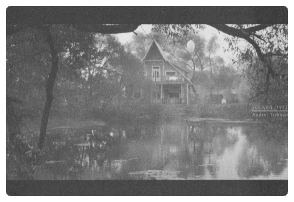
//Sanatın, sinemaya kadarki tavrını, tüm kullanım farklarına rağmen "imge bağımlısı" olarak tanımlarken, sinema ile birlikte "imgeden kaçan" bir tavır aldığını söylemek, aşırı yorum değildir. "imgeden kaçmak" kurulu dil dizgelerinin ötesine geçmek demektir bir anlamıyla. Dilden firar etmek... Ancak, bu durumu açıklamaya çalışırken, imgelerin farklı kullanımlarının, "imgeden kaçmaya" nasıl yol açabileceğini de anlamaya çalışacağız.
"O, yaratan, var eden, şekil veren Allah'tır. En güzel isimler O'nundur. Göklerde ve yerde olanlar O'nun şanını yüceltmektedirler. O galiptir, hikmet sahibidir'.' (Haşr 24)
Ol Allâhu Teâlâ, meşiyyeti üzere eşyayı takdîr u halk ider.
Ayânı izhar u ademden vücûda getürir. 150
Mahlûkatın her birine bir sûret virüb, birbirinden mümtaz ider. 151
A'nın için esmâ-ı hüsnâ vardır ki, şer ve akılda maânî-i müstahseneye delâlet ider.
Semâvât ü Arz'daki mahlûkàt cümle Allâhu Teâlâyı nekâyisten tenzîh iderler. 152
Ol mülkünde Azîz u Gàlib vü emr u fi'linde Hakim'dir. 153 (TEFSİR-İ MEVEKIB)
Giriş
İSTER YARATILMIŞLARIN KOPYASI, ister kutsal olanın ikonu, ister yaratış faaliyetinin bir taklidi olsun; ister "içkinlik düzlemi"nden gelsin, ister aşkınlıktan "kopyalansın", isterse de duyu organlarının elde ettiği verilerle kurulsun, hayal/imge, sanatın tüm dalları için bir ayna görevi görür.
Aynadır imge, çünkü sanat, bir yansıma olarak imgede "varlık bulur".
İmgede yansımasını bulan sanat, "temsil ettiği" düzlemin varlığı ya da yokluğunu ifşa eder.
Sanat imgede yansımasını bulur.
İmgede yansıyan hayat, kendi başına bir varlık kazanır.
Ancak ister taklit edildiği varolanın bir göstergesi, isterse bir işaret ya da ayet olsun, imge ile "hayatın" veya "hakikatin" bizatihi kendisi arasında her zaman bir ayrım mevcuttur.
Türlü sanat dalları ve gelenekler, imge ile hakikat arasındaki bağ kurmak üzere değişik yaklaşımlarda bulunurlar.
NOT: BÜTÜN FARKLILIKLAR İMGE İLE HAKİKAT ARASI İRTİBATIN,TEZAHÜRÜNÜN FARKLILIĞINDAN İBARET İMİŞ.
Kimisi, "görülen dünya"nın taklidini, hayatın kendisini aktarmak için yeterli görür.
Burada "yaratılanların", rasyonel ve duyusal düzlemde çalışan akıl ve duyu organlarıyla elde edilen kopyalarının bire bir sanatın imgesi haline dönüştürülmesi vardır.
İslam sanatında ve geleneğinde temsil, tasvir ya da suretin taklidi olarak görünen ve genellikle uzak durulmaya çalışılan bu mimesis tutumunun en önemli sıkıntısı, sadece hakikatin katmanlarını ve görünenin ardındaki hakikati sez(dir)medeki başarısızlığı değil, görünenin bir taklidinden, hakikatin yerine geçmeye doğru ilerleyen bir simülasyon olma geçişliliğidir.
görünenin bir taklidinden, hakikatin yerine geçmeye doğru ilerleyen bir simülasyon
Özellikle Uzakdoğu hikmet geleneklerinin sanat anlayışlarında ve Rönesans öncesi Hıristiyan sanatında görünen bir başka tutum ise, kutsal olanla imge arasında kurulan, ama duyusal taklide dayanmayan bağdır.
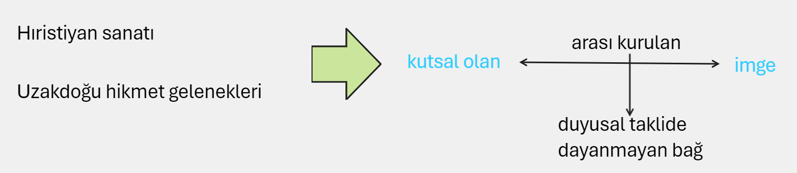
Yüzeydeki gerçekliğin bir taklidi yerine, bu defa *** "aşkın olanın" "içkin olanda" tecelli ve tezahürlerinin imgeye dönüştürülmesi *** söz konusudur.
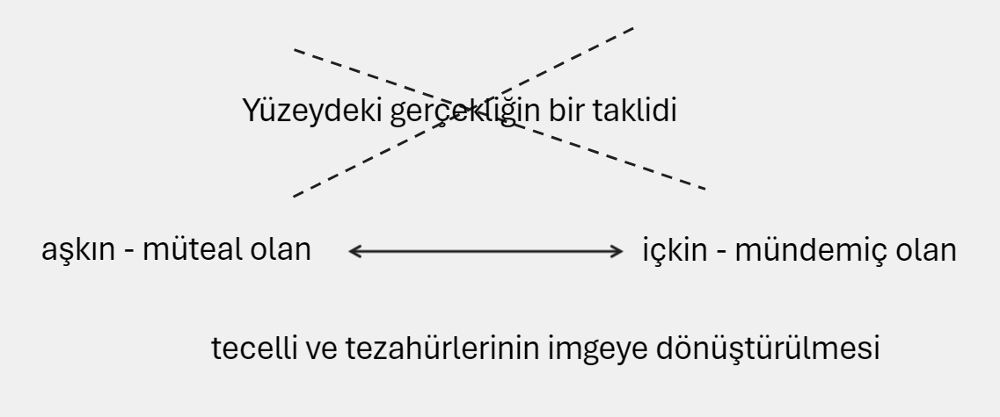
Özellikle bu geleneklerin kutsal sanatlarında ikon olarak anlaşılan bu imge görünümü, "tanrısal olanın" dünyevi olanda görünüp kendini açması olarak anlaşılabilir.
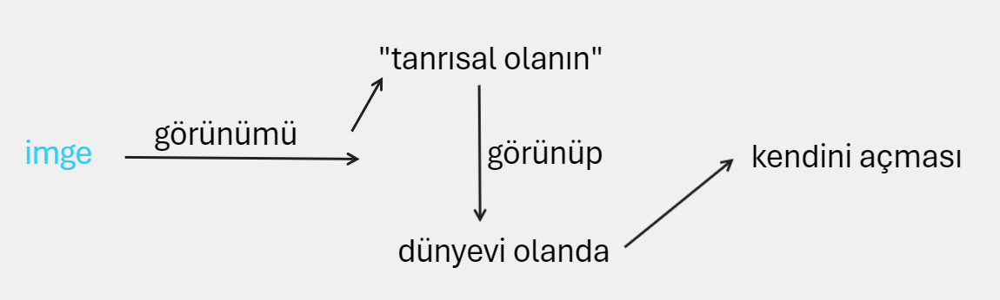
Ancak temsil krizi burada da kendini belli eder.
Zira özellikle ikonoklast akımların itirazlarında görünebileceği gibi, aşkın olanın içkin olanın düzeyine "indirgenip" tek boyutlu hale dönüştürülmesi söz konusudur burada da.
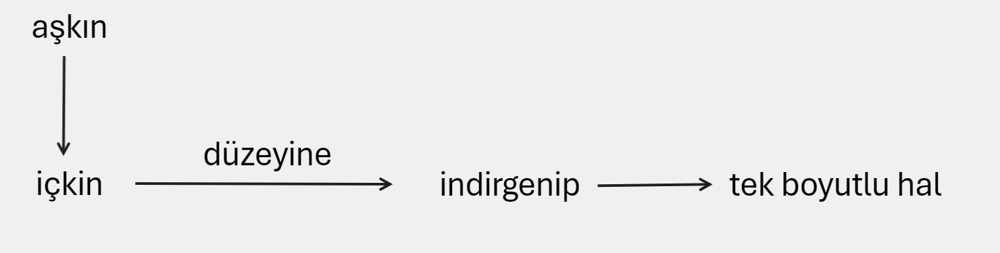
İkon, daha sonra detaylı olarak tartışacağımız gibi, Allah'ın isim ve sıfatlarının tecellilerinin veya çeşitli işlerle görevli "meleklerin" bir görünümü olarak, Allah'a o ikon "aracılığıyla" ibadet etmenin şekillerinden birisine dönüştürülür.
Özellikle Yahudi geleneği, İslam anlayışı ve Protestan Hıristiyanlığın ikona temel itirazları bu noktadan başlar.
Yahudi geleneği |
|
|
İslam anlayışı |
ikona itiraz |
|
Protestan Hıristiyanlık |
|
Ancak daha sonra göreceğimiz gibi, bu itirazlarda da çok temel bazı ayrılıklar mevcuttur.
Uzakdoğu sanatlarının ve Rönesans öncesi Hıristiyan sanatının sembolizmi, ikon ile temsil ettiği arasında bağları kuran dizidir.
Bu sembolizm, aşkın olan Allah ile O'na suretler aracılığıyla tapmanın bir şekli haline gelen ikon arasındaki bağları esnek tutar.
Burada çok temel bir tespit yapmak sonraki tartışmalarımız için bir temel işlevi görebilir.
"Allah şöyle buyurur: O'nun benzeri yoktur [42: 1 1); bu ayette Allah {kendisini] tenzih etmiştir. O işiten ve görendir {42:1 1); burada ise benzetme yapmıştır.
Allah, O'nun benzeri yoktur, diyerek benzetme yapmış ve ikilemiştir; O işiten ve görendir, tekrar tenzih etmiş ve birlemiştir. " 1
Fusulu'l-Hikem' den alıntıladığımız pasaj, yukarıda tartıştığımız konuyu açıklamak için oldukça önemli bir çıkış noktası olabilir.
Hz. İbn Arabi'nin (k.s.) perspektifinden baktığımızda, Allah'a, O'nun isim ve sıfatlarının tecellilerinin görüntüleri olan ikonlar aracılığıyla ibadet eden Hz. Nuh (a.s.) kavminin tutumu teşbih tutumudur.
İbn Arabi, Hz. Nuh'un (a.s.) davet metodunu da -aynı zamanda en mükemmel ve eksiksiz davet metodu olarak Peygamber Efendimiz'in (s.a.v.) davetini görür İbn Arabi - tenzih olarak görür ve eksik olarak nitelendirir.
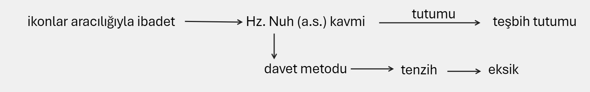
Tenzih ile teşbihin mükemmel birlikteliği, ya da İbn Arabi'nin ifadesiyle "tenzihte teşbih, teşbihte tenzih"2 Peygamber Efendimiz'in (s.a.v.) davetidir.
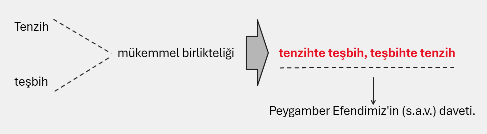
Uzakdoğu hikmet geleneklerinin bizim geleneğimiz açısından bir değerlendirmesini yapan Yusuf Kaplan'ın aşağıdaki tespitleri tartışmamız için önemli bir çıkış noktası olabilir.
"Pagan Batı uygarlığı, epistemoloji; "Doğu" hikmet gelenekleri fenomenoloji; vahiy medeniyeti ontoloji üzerinde/n yolculuğa çıkar/ır.
Pagan Batı |
uygarlığı |
epistemoloji |
üzerinde/n yolculuğa çıkar/ır |
Doğu |
hikmet gelenekleri |
fenomenoloji |
|
vahiy |
medeniyeti |
ontoloji |
Bu cümleyi, medeniyetimizin diliyle kurmamız gerekirse ...
Sünnet-i seniyye üç safhanın toplamından oluşuyor:
Söz (Kavl, "mantık"-"akıl"), Fiil ve Hal.
(Sünnet-i seniyyenin menbâı üçtür: Akvâli, ef'âli ve ahvâlidir)
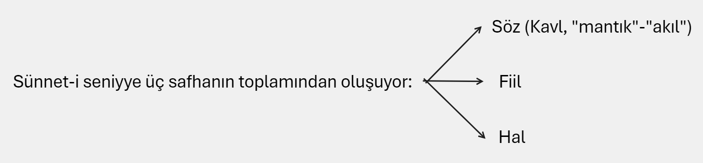
Hal böyle olunca, Batı uygarlığının söz-merkezli; "Doğu" hikmet geleneklerinin fiil merkezli; vahiy medeniyetlerinin hal-merkezli olduğunu söyleyebiliriz.
Batı uygarlığı |
söz-merkezli |
"Doğu" hikmet gelenekleri |
fiil merkezli |
vahiy medeniyetleri |
hal-merkezli |
Söz-merkezli gelenekler de, fiil-merkezli gelenekler de, sadece mevcut/yaratılmış üzerinden işler;
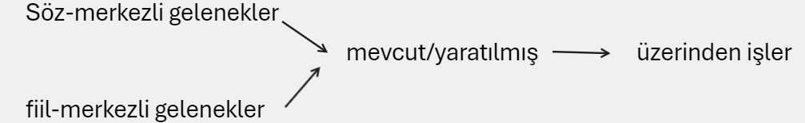
biri (Batı), fizik gerçeklikte dondurur insanı ve yolculuğunu (fena'da fena); diğeri ("Doğu" hikmet gelenekleri) fizikötesi gerçeklikte "hiçliğe" ulaştırarak hayattan uzaklaştırır ve durdurur insanı (beka' da fena)."3
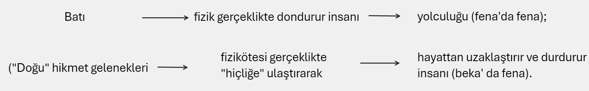
Kaplan'ın dediği gibi, tenzih ile teşbihin tevhid edilmesi yerine tenzih ya da teşbih tutumlarından birisi ağır basan anlayışlar, dengeyi bulmakta çok başarılı olamazlar.
Uzakdoğu geleneklerinde olduğu gibi, varolanların içinde kaybolup/dağılıp, Varlık ile bağ kurmaya çalışırken dahi, o bağı varolanlar içinde yitirmek tehlikesiyle karşı karşıya kalınabilir.
İkonun İslam sanatı anlayışı açısından reddedilişinin temel açıklamasını burada bulabiliriz.
İkon, özellikle kutsal olanın "daraltılması" ve teşbihin içinde tenzihi;yok edilmesi ve tevhidden uzaklaşma tehlikesini barındırdığı için kaçınılması gereken bir şey addediliyor.
Ancak bizim üzerinde durmaya çalıştığımız itiraz noktası ile mesela Yahudi geleneğinin itiraz noktalarını birbirinden ayırmak gerekiyor.
Ya da Batı düşüncesi içinde bir "put kırıcı" olarak tanımlanabilecek olan Levinas' ın ikona itirazı ile İslam vahyi ve geleneğinden sanata 30 bakan birisinin ikona muhalefeti bire bir aynı gerekçeler üzerine oturtulamaz.
Zira İslam sanatının da sembolik bir düzlemi vardır.
Bu sembolik düzlem, ikondan kaçarken, temaşa ve ritm ile sonsuzluğa doğru yürür.
temaşa ve ritm ile sonsuzluğa doğru yürümek
Teşbihi de tenzihi de, peşinde olduğu tevhid anlayışının içinde en uygun oranlarda eritmeyi amaçlar.
Sinemaya, İslam sanatı ve o sanatın temel karakteristiği açısından bakışımızın, sadece emir ve yasaklara indirgenebilecek "fıkhi" bir noktadan hareket etmediğini özellikle belirtmemiz gerekiyor.
Bakışımız daha çok, sanatın, hakikatle ilişkisinde nerelere ve nasıl ulaşabileceği sorusuna, çeşitli geleneklerin "verdiği" ve "veremediği" cevaplar üzerinden yükselmeyi amaçlıyor.
Uzakdoğu sanatı hakikatle ilişkisinde nerelerde eksik kalıyor?
Uzakdoğu ikonu Tanrısal olanın sembolü olurken, onunla kurduğu ilişkide nasıl sorunlar barındırıyor?
Hakikatin veya yüzeydeki görünür gerçekliğin temsil ve tasviri, nasıl bir kısıtlama ve "ayrışma" yaratıyor?
Bu sorulara verilebilecek her cevabın, sinemanın manevi düzlemini anlamak açısından hayati katkıları olacaktır.
Sanatın, sinemaya kadarki tavrını, tüm kullanım farklarına rağmen "imge bağımlısı" olarak tanımlarken, sinema ile birlikte "imgeden kaçan" bir tavır aldığını söylemek, aşırı yorum değildir.
"İmgeden kaçmak" kurulu dil dizgelerinin ötesine geçmek demektir bir anlamıyla.
Dilden firar etmek ...
Ancak, bu durumu açıklamaya çalışırken, imgelerin farklı kullanımlarının, "imgeden kaçmaya" nasıl yol açabileceğini de anlamaya çalışacağız.
Sinemanın imgelerinden bahsederken, o imgelerin, zamanın olmadığı ya da salt psikolojik bir algı meselesine indirgendiği diğer "statik sanatlardan" nerelerde farklılıklar gösterdigini tespit etmemiz önemli.
Zira İslam sanatının, ikon, temsil, suret veya tasvir yasağı olarak tanımlanabilecek olan tutumunun gittiği zorunlu yolculuğun, sinema-imgesi ile temsil edilebileceğini düşünüyoruz.
Sinema imgesi, sinemadan öncesine kadar anladığımız ve algıladığımız imge yapısını kökten değiştiren ve temelde o tür imgelerin hepsinden "kaçan" ve "doğru" kullanıldığında İslam sanatının temaşa, ritm ve tefekkürüne zemin hazırlayabilecek bir özelliği bünyesinde barındırır.
Şimdi, sinemanın çeşitli biçimlerde "kaçtığını" düşündüğümüz, çeşitli sanat geleneklerindeki imge kullanım biçimlerine biraz daha derinlemesine bakalım.
Antikiteden Moderniteye Batı Sanatı
Sanat başlıklı kitabında France Farago, Platon'un öfke duyduğu asıl şeyin, Yunan sanatının, sofistlerin düşüncesiyle birleşen insan-merkezci bir akım olan illüzyonizm ve natüralizme doğru gidişi olduğunu ifade eder.
Mimesis estetiğine karşıt bir konum alan Platon, Farago'ya göre yine de taklidi, sanatsal üretimin evrensel şartı olarak görüyordur.
Ancak Aristo'nun mimesis anlayışından asıl farkı, Platon'un, sadece görünen şeylerin olduğu gibi aktarılmasına karşı olan tutumudur.4
Platon' un ideleri, güzellik denen şeyin asıl anlamlarını ihtiva etmesi açısından, Platoncu sanatın deposunu oluştururlar.
Natüralist mimesis, temsili ve taklidi yatay düzeyde ifa etmesiyle Platon'un tepkisini çeker; ancak temel anlamıyla Platon'un sanatı da bir başka açıdan temsilidir denebilir.
Aristo'nun mimesis anlayışının, büyük oranda Batının laik sanatını etkilemesi, hatta Rönesans sonrası dini sanatı da etkisi altında bırakması, Nasr'a göre, Batı'nın Prometeyen insan görüşünün bir yansımasıdır.5
(Prometeyen: Tanrıların Ateşini Çalan Titan
Prometeyen terimi, Yunan mitolojisindeki Titanlardan biri olan Prometheus'a atıfta bulunur. Prometheus, tanrılardan çaldığı ateşi insanlığa veren ve böylece insanlığın ilerlemesini sağlayan bir figürdür. Bu eylemi nedeniyle Zeus tarafından cezalandırılır.
Günümüzde "Prometeyen" kelimesi genellikle şu anlamlarda kullanılır:
Yenilikçi ve cesur: Prometheus, kuralları çiğneyerek insanlığa faydalı bir şey yaptığı için, "Prometeyen" sıfatı genellikle yeni fikirler üreten, mevcut düzeni sorgulayan ve risk almaktan çekinmeyen kişiler için kullanılır.
İsyankar ve özgür ruhlu: Tanrıların otoritesine meydan okuyan Prometheus, özgürlük ve bağımsızlık arayışının bir sembolüdür. Bu nedenle, "Prometeyen" terimi, otoriteye karşı çıkan ve kendi düşüncelerini özgürce ifade eden kişiler için de kullanılabilir.
İnsanlığa hizmet eden: Prometheus, insanlığın gelişimine katkıda bulunduğu için, "Prometeyen" sıfatı, insanlığın iyiliği için çalışan, fedakarlık yapan ve başkalarına yardım eden kişiler için de kullanılabilir.)
Prometeus'un, Tanrı'ya bir "rakip" olarak ortaya çıkması, insanın "merkezliğini" zorunlu kılmış ve Tanrı ile insanı bir "rakip" haline döndürmüştür.
Trajiğin asıl görünümü de bu rakiplik anlayışında yatar.
Hıristiyan teolojisi, Tanrı ile onun düşmanlarını aynı düzlemlerde "rakipler" olarak kurgulamasıyla, Prometeyen anlayışa da zemin hazırlamıştır.
Hıristiyan teolojisi Prometeyen anlayışa da zemin
İblis' in bir tür Karşı-Tanrı olarak görüldüğü Hıristiyan teolojisi, laik teolojinin Prometeyen insanının da kaynağıdır.
insan, artık kendi yazgısının tek sorumlusu ve belirleyicisi olarak, geleceğini Tanrı ile girişeceği Prometeyen savaşla kuracaktır.
Bu da Tanrı'nın yarattıklarının insan eliyle tekrar imal edilmesi demektir.
Taklidin estetiği böyle ortaya çıkar.
Allah'ın "iki eliyle" yarattığı insan, (Sad 75)6 o "iki elin" ne anlama geldiğini unutmuş ve Allah' ın yarattıkları üzerinde güç ve hak talep etmeye başlamışsa, bunun ortaya koyacağı sanat, Yunan sanatının ve Rönesans sonrası Batılı sanatın natüralist kanadı olacaktı elbette.
Platon'un sanat eleştirisi, Yunan geleneğinin hikmet boyutunu kaybedip insan-merkezli bir hale dönüşmesi sonucu ortaya çıkan 'natüralist sanata yönelik bir eleştiriydi aslında.
Zira Platon' un Mısır'ın geleneksel ve sakerdotal sanatına çok değer verdiği biliniyor.7
Aristo Retorikte en önemli teorisyeni olduğu mimesisle ilgili tespitinde, resim, heykel ya da şiir sanatının yaptıkları taklitler ve kendi başına güzel olmasa bile olduğu gibi temsil edilen her obje karşısında doğal zevk aldığımızı söyler.
Aristo'ya göre, bu, o nesnelerin kendisinden alınan bir zevk değil, tasarımsal bir akıl yürütmeyle bu şeyleri birbiriyle özdeşleştirdiğimiz ve bilgimizi artırdığımız için aldığımız zevktir.8
Aristo'nun burada özellikle natüralist sanatın, rasyonalist bir çıkarımından ortaya çıkan yargıdan alınan zevkten bahsetmesi, sanatı salt "bilgilendirme" aracı olarak gördüğü sonucunu doğurabilir.
Zira O'na göre estetik yargı, rasyonel çıkarsamanın, ya da benzerlik ilişkisi aracılığıyla kurulan bir bağın yargısıdır.
estetik yargı benzerlik ilişkisi aracılığıyla kurulan bir bağdır. (platon’a göre)
Güzel olan, modeline en çok benzeyendir.
Sanatın insan psikolojisine ve insanın sadece kendi yapıp ettiklerine indirgenmesi, sanatın ruhunda olması gereken çok boyutluluğu yok eden bir şeydi.
Bu noktada son derece ilginç bir tespiti göz ardı etmemek gerekiyor.
Frithjof Schuon ve Seyyid Hüseyin Nasr gibi gelenekselciler, Batı'nın rasyonalist ve natüralist sanatına karşı bir tepki olarak doğmuş olan sürrealizmden empresyonizme kadar hemen tüm modernist sanat akımlarını, aynı "ilkenin" bir devamı olarak görürler.
Sürrealizm empresyonizm
Bu ilke, yukarıda bahsettiğimiz Prometeus haline dönüşmüş insan fikridir.
"Sanatın maneviyat tarafından belirlenmediği ve maneviyatın rehberliğinde yürümediği bir ortamda, sanat, bireyselin ve bireyin psişik araçlarının bir kullanımı haline dönüşür. Yüzeysel kopyalama uç noktalarına vardırıldığında sürrealizm canavarı ortaya çıktı. Sürrealizm, sanatın bütünselliğini bozup, onu parçalarına böldüğü için 'infrarealizm' olarak adlandırılmaya daha uygundur."9
SÜRREALİZM: Gerçeküstücülük ya da sürrealizm, Avrupa'da birinci ve ikinci dünya savaşları arasında gelişmiştir. Temelini, akılcılığı yadsıyan ve karşı-sanat için çalışan ilk dadaistlerin eserlerinden alır. Sürrealizm, aklın kontrolünden kaçan şuur akışının, rastlantıya bağlı ruh durumlarının, düzensiz hayallerin ve rüyaların sanata aktarılmaya çalışıldığı bir edebiyat akımıdır.
Batılı sanatın, özellikle Pagan Yunan ve Rönesans sonrası natüralizmlerinin dahil olduğu ana akımı, imgeyi, bir değiş tokuş aracılığıyla nesnenin yerine geçirmekteydi.
İmge, temsil ettiğinin bir sembolü olmaktan çok, onun bir kopyası olarak önem kazanıyordu.
Özellikle vahye bağlı olan tüm geleneklerin uzak durmaya çalıştığı bir tutumdur bu.
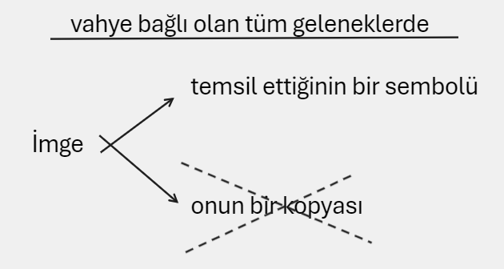
Zira yukarıda bahsettiğimiz gibi, nüvesi Allah'ta başlayan, insanda bir tecelli olarak hüküm süren ve amacı Allah'a kavuşmak olan kutsal sanatların tümünde, Prometeyen sanat anlayışları, kopyaladığı nesnenin dahi, hakikatiyle imgesi arasında bağları kopardıkları için kabul edilemez tutumlardı.
Tam bu noktada imgeye ve sanata yönelik eleştirileriyle Levinas'ın fikirlerine göz atmak faydalı olabilir.
Levinas, eleştirilerini sadece, imgenin temsil ettiğiyle arasındaki açıklığa değil, sanatın kendisine getirerek, sanatın her şekilde bir imge-temsil mekanizmasıyla açıklanabileceğini, ama bu açıklamanın bizi kaçınılmaz olarak nesne olmayana getireceğini iddia ederken, kökten-Yahudi/ikonoklast bir imge karşıtlığı mı gösteriyordur?
" Eğer sanat, imgeyi varlığın yerine koymaktan müteşekkilse, estetik öğe, etimolojisinin de gösterdiği gibi, duyumsamadır. Entelektüel olarak geliştirilmiş ilksel verileri ve öğeleriyle 34 dünyamızın bütünü bizi müzikal olarak etkileyebilir; bir imge hôline gelebilir. Bu yüzden nesneye bağlı olan klasik sanat, 'bir şey' ifade eden tüm o resimler, heykeller, söz dizimi ve noktalamaya itibar eden tüm o şiirler, sanatın gerçek özüne, -temsili dağıtarak, eserlerin bize sunduğu nesneleri, sesler, renkler ve kelimeler dünyasın dışına çıkaran saf resim, saf müzik, saf şiir iddiasında olan- modern eserlerden daha az uygun değildir. Temsil edilen nesne, imge hôline geldiği için nesne-olmayana dönüşür; imgenin kendisi, bizim burada ortaya çıkarmak istediğimiz, ona uygun kategoriler içerisine girer."10
Alıntıdan da anlaşılabileceği gibi, Levinas, eleştirisini sadece imgenin bir mimesis olarak kullanıldığı klasik Batı sanat geleneğine değil, aynı zamanda ona bir itiraz olarak doğmuş modernist sanata da yöneltiyor.
Levinas'ın buradaki itirazı, imgenin, gerçek olan nesne ile arasında olduğunu varsaydığımız bağın gerçekliğine yönelik bir itirazdır temel olarak.
Ona göre, "gerçek dünya" imgelemde paranteze alınmış, ya da tırnak içindeymiş gibi görünür.
İmgesel dünya kendini gerçek olmayan olarak sunar.
Sanat hakkında yazdığı " Gerçeklik ve Gölgesi' başlıklı makalesinde Levinas, tezlerini biraz daha derinleştirerek, simge veya işaret ile imge arasındaki farkı, nesnesiyle ilişki kurma bakımından ortaya koyar.
"Bu durumda orijinal olana benzeyen, bağımsız bir gerçeklik olarak imgeye geri mi dönmeliyiz? Benzerlik, imge ile asıl olan arasında karşılaştırmanın sonucu olarak ortaya konuluyorsa hayır; ama benzerliği, imgeyi meydana getiren hareketin kendisi olarak alırsak evet. Gerçeklik sadece ne ise o olmayacaktır, örtüsünün hakikat içinde açılışından ibaret olmayacaktır; o aynı zamanda da kendisinin çifti, gölgesi ve imgesi olacaktır."11
Levinas'ın bu noktada, dönülmesi gereken imge tipinin benzerliğini, biçimsel karşılaştırmanın değil, eylem biçiminin benzemesi açısından ele alması dikkat çekicidir.
Zira Levinas, burada, imgeyi veya sanatı "yaratılanların taklidi" olarak değil de, "yaratışın taklidi" olarak düşünen geleneksel sanat anlayışlarına yaklaşır.
Levinas'a göre temsil etmenin bilinci, nesnenin orada olmadığını bilmektir.
Temsil olarak imge, nesnenin "varlığından" çok, "yokluğunu" imler.
İmgede gördüğümüz özellikler, Levinas'a göre nesnenin bozulmuşluğunu, ölümünü veya kendi yansıması içinde kendi bedeninden sıyrılmasını gösterirler.
Orijinal nesnenin yerini onun temsili doldurmuştur; ama bir farkla: Orijinal olanın varlığını değil, yokluğunu açılımlayarak!
Böylece nesnenin temsili olarak resim, tüm sanat kuramlarının iddiasının aksine, verili gerçekliğin ötesine değil "berisine" düşer Levinas'a göre.
Tersine simgedir resmin ortaya koyduğu!
Varolanların, kendi yüzlerinde kendi alegorilerini ya da "karikatürlerini" taşıdığını ifade eden Levinas'a göre, varlığın kendi yüzünde kendi alegorisini taşıması, imgenin işlevini de belirler.
İmge sadece yansıtmakla kalmaz, aynı zamanda varlığın, yüzünde taşıdığı alegoriyi de "tamamlar".
İdea ile ruh; varlık ve onun açığa çıkarılışı gibi; varlık ve onun yansıması da eşzamanlıdır.
"Sanatın ya da doğanın önceliği üzerine yapılan tartışma (sanat mı doğayı taklit eder, doğa mı sanatı) imge ve hakikatin eşzamanlılığını fark etmede başarısızdır."12
Eş zamanlılık iddiası, Levinas'ın tüm Batılı sanat ve düşünce geleneğine itirazı olarak önem kazanır.
Zira temsili ile nesne arasında sebep-sonuç öncelik-sonralık bağını kırar Levinas.
Ve bu noktada İslam sanatının anlayışına yaklaşır.
İslam sanatındaki ebediyet ve yaratışın zaman-üstülüğü veya eş zamanlılığı, imgenin bir üst-ilkenin "ikonu" olmasını değil, onun temaşaı olmasını zorunlu kılar.
Ancak Batılı sanatın yaptığı bu değildir Levinas'a göre.
İmge, varlığın yüzündeki karikatürün "saklanma" çabasıdır; ama aynı anda karikatürü bir idol olarak açığa çıkarmaktan geri durmayan bir saklama çabası ...
Özellikle klasik olarak adlandrılan mimesis sanat bunu yapar; karikatürü düzeltir, güzelleştirir ve "güzellik" varlığın, gölgesi gibi kendi yüzünden eksik olmayan karikatürünü maskeleme işlevi görür.
Ancak Levinas, en mükemmel imgenin bile varlığın karikatürünü düzeltemediğini söyler.
" Karikatür, kendini aptallığı içinde bir idol olarak gösterir. idol olarak imge, bizi kendi gerçek olmayışının ontolojik anlamına götürür. Bu defa, varlık eserinin kendisi, varlığın bizzat varolması, bir varolmayı andırışla ikiye katlanır." 13
Son tahlilde imge, "gerçekliğin", kendi yüzünde taşıdığı karikatür veya alegori olarak tasarlanır Levinas'ın düşüncesinde.
Levinas' ın sözünü ettiğimiz makalesinde Batılı sanata yönelik "saldırısını", sanatın ve imgenin gerçekliği olumsuzlamasına yönelik bir saldırı olarak görebiliriz.
Sanatın, imgenin "gönderisi" olarak anlaşılan yapısı, gerçeklik ve gölgesi ile kişi ve onun karikatürü arasındaki ilişki gibi, gönderiyi yokluk ya da nesnenin bozulmuşluğu üzerine kurar. Yani sanat, temsil ettiği şeyi bir nesne olmaktan çıkarır.14
Levinas'ın imgeye yönelik itirazı, Spargo'ya göre, Baudrillard' ın simulakr kavramındaki simülasyon ve simülasyon-olmayan arasındaki gerilimin kalbine doğru gider ve bu noktada sorar Spargo:
"O zaman hangisi ikonun asıl ihlalidir; gerçek bir mevcudiyeti (veya tanrısallığı) kopya edip sonrasında sanki orijinalinin yeterli bir temsiliymişçesine kendini yok etmesi mi, yoksa boş olduğunu, ikon tarafından icmal edilen hiçbir şey olmadığını bile bile gerçek bir mevcudiyetin (veya tanrısallığın) üzerinde hak iddia etmesi mi?'15
Spargo'nun bu sorusu, ikon ile ikonoklast tutumun ilke olarak benzer noktalardan hareket ettiklerini ifade etmesi açısından önemlidir.
İmgelerin temel özelliği Levinas'a göre, gerçekliğe olan göndergesiz ilgisinde ve mevcudiyet alemiyle temsil alemi arasındaki boşluğa etki etmesindedir.
Chanter, Levinas üzerine yazdığı bir makalesinde16, Levinas'ın Heidegger'in reddettiği Platoncu anlayışı koruduğunun düşünülebileceğini; ancak sanatı çığır açıcı bir olay olarak gören ve taklitçi sanat anlayışının karşısında duran Heidegger'in tersine Levinas'ın, onu geleneksel hakikat arayışından koparırken bile taklidi yeniden hayata döndürdüğünü söylerken haklıdır.
Zira Levinas, sanatı hakikat arayışının bir enstrümanı olarak gören Heidegger'in aksine, etik ve felsefe lehine bir dizi argümanla, sanatın hakikat iddialarının hepsinin yanıltıcı bir yalancılık ve boş gururlanma olduğunu iddia eder.
Levinas'ın imgeye ve onun dolayımında sanata olan eleştirisi, mimesisçi temsilin ifratına bir tefrit ile karşılık vermektir aslında.
Teşbih ile tenzihin birliğini kuramayan bir düşünce için, imgenin reddi ve ikonakırıcılığın boyutlarının, gerçekliğin ve giderek hakikatin reddine doğru gitmesi çok şaşırtıcı olmayacaktır.
Levinas'ın tespitleri, imge ile onun nesnesi arasındaki ilişkilerin doğası üzerine ufuk açıcı olmakla birlikte, imgenin tüm biçimlerini, temsilin imgesi olarak kısıtlaması ve hatta "imgenin zaman katılmış halleri" olarak gördüğü müzik ve sinema gibi sanatların da imgenin durağanlığını değiştiremeyeceğini söylemesiyle, sanat hakkında köklü ve sağlam bir doğrultu belirleyebilmekten uzaktır.
Zira Levinas'ın temel itirazı, sanata, hakikat arayışında bir yer verilmesine yöneliktir.
Etik ve felsefenin kendisi varken, sanata bu konuda söz söylemek değil, kendisine verilen oyuncaklarla oynamak düşer, demektedir adeta. 😊
Batı geleneğinin kutsal sanatını kitap içindeki birçok yerde değişik veçheleriyle ele alacağız; ancak bu aşamada Batı'da özellikle modernist sanat olarak tanımlanan kimi akımlar içindeki kimi sanatçıların temsile karşı duruşlarını gözden geçirmek, amacımız açısından önemlidir.
Klee, Kandinsky, Mondrian, Malevitch gibi önemli sanatçıların özellikle temsilin krizi noktasında ortaya çıkması ve mimesis anlayışının yerine kimi-zaman "mistik" denebilecek eğilimler sergilemeleri özellikle dikkate şayandır.
Sanat başlıklı kitabında Farago, Klee ile ilgili bölümde, Batı'nın klasik mimesisçi sanatı ile Klee'nin de içinde bulunduğu sanat anlayışının farklarını ortaya koyan bir tablo çizer.17
Ona göre klasik Batı sanatı (geleneksel sanat olarak adlandırır) görünür olanın taklidini veya "güzelleştirilmesini" yaparken; diğeri görülür olanın arkeolojisine soyunur.
Bu, görünen ile imgesi arasındaki bağ kurulmadan önceki bir tarih-öncesinin imlenmesidir adeta.
Ya da Platoncu tabiriyle idelerin gösterilmesine yolculuk ...
Düşünce ve bilinç-öncesi zamanın işaret edilmesi.
Yaratılanların ya da doğanın taklidine soyunan klasik sanatın karşısına, yaratışın (doğalaştıran doğanın) taklidi olarak bir başka sanatı koyar Klee gibi soyut sanatçılar …
Eski sanat bir "tamamlanmışlik' ' iken, yeni sanat bir "oluş" olarak sunar kendini.
Bu yeni sanatta artık zamanda bir boyut olarak vardır.
Klasik sanatın "varlık-merkezliliğine" karşıt şekilde modernist sanat, oluşu yüceltir.
Bu noktada Yusuf Kaplan'ın ve Schuon'un tespitlerine bakmak faydalı olabilir.
Kaplan, Uzakdoğu hikmet geleneklerini tanımlarken, onların fenomenolojik olduğunu ve eylem ile tanımlanabileceğini söyler.
Batı'daki modernist sanatın oluş yönündeki bu eğilimi, klasik sanatın hakikate ve Varlık'a yönelik tutkusunu bitirip, oluş içinde yüzen bir müphemliğe, Kaplan' ın deyişiyle eylemin ve fenomenolojinin hükümranlığının kıyısına getiriyor, modernist Batı sanatını.
modernist Batı sanatı eylemin ve fenomenolojinin hükümranlığının kıyısında
Bu eğilimin büyük sanatçılarının çoğunun, Uzakdoğu hikmet geleneklerinden etkilenmiş olması sürpriz değildir.
Varlık'ı "rasyonel" ve natüralist kalıplar içinde dondurmaya çalışan bir sanat anlayışının karşısına, Varlık'ı varolanın sonsuz dalgalanmasında yok edip silen bir anlayış imgenin "tarihine" göz atarken, Batılı modernist sanat içinde imgenin, temsili olandan kırılması ve dönüşümünün ortaya koyduğu soyut sanatın asıl mahiyetinin ortaya konması, bizim amaçlarımız açısından büyük önem arz ediyor.
Sanatı, doğanın bir taklidi olarak gören mimesisçi sanatın aksine, modernist sanatın tezi, imgenin "tarih-öncesini" vermektir.
Klee'nin ifade ettiği gibi, modernistlerin çoğu için "sanat, görülür olanı yeniden üretmez; görülür kılar. Sanat, yaratılış imgesine denk düşer. Tıpkı dünyanın evrenin bir sembolü olması gibi, sanat da bir semboldür."18
Yaratılan yerine yaratılış imgesinin üzerine basılması oldukça önemlidir.
İşlev veya yaratılış biçimi olarak doğanın taklidi ile görünüş olarak doğanın taklidi arasındaki fark, mimesisçi sanat ile modernist Batı sanatının arasındaki çizgiyi kalınlaştırır.
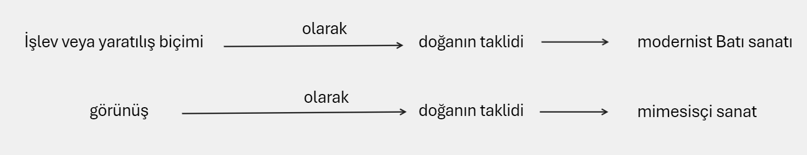
Kandinsky ile Schönberg'in 20. yy'ın başında sanat hakkındaki teorik ve pratik düzeydeki katkıları, figüratif olanın dışında ve tinsel alana yönelmeyi amaçlayan bir sanat anlayışını görünür kılar.
Bir ressam ile bir müzisyenin sanat anlayışındaki bu ortaklık, Farago'ya göre, resme bir "müziksellik" katmıştır.
Kandinsky'nin "sanatın doğadan üstün olduğu" tezi ve "doğayı taklit etmekten vazgeçtiği andan itibaren doğayı daha çok sevdiğini" ifade etmesi, sanatın yeni yönelimini belirlemiştir.19
Levinas'ın klasik sanat ile modern sanatın kavgasında "sanat mı doğadan, doğa mı sanattan üstündür" sorusuna verdiği cevap bu noktada bizim için de önemli bir çıkış olabilir.
Modern sanatın, natüralist ve rasyonalist formlardan kurtulmak için geldiği yeni yer, "biçimin reddi" olmuştur.
Nasr'ın ve Schuon'un modernist sanata yönelik itirazlarını tekrar hatırlamamız gerekiyor.
Biçimin ve herhangi bir "ilkenin" reddi, modernist sanat içinde değerlendirilen, özellikle ezoterik kimi akımlardan etkilenmiş sanatçıların çoğunun "üslubu" haline dönüşmüştür.
Kandinsky'nin söylediği gibi "ruhun içsel bir zorunluluğundan doğan şeyin" güzel olarak tanımlanması, "görünenin" mükemmel taklidinin "güzel" olarak değerlendirildiği mimesisçi sanat ile belirli noktalarda benzerlik taşır.
Zira birinde mutlak olan "dışarıdaki" iken, diğerinde, dışarıdakinin reddi ve bir "içkinlik" sözkonusu olmaya başlar.
Farago, Sanat başlıklı kitabında bu durumu panteist bir mistisizm olarak tanımlar.
Kandinsky'ye göre, doğanın objektifliği ile sanatın sübjektifliği panteist türden gizemli bir bağ ile birbirlerine bağlıdırlar. 20
Ve bu bağlantının kimi zaman uyum içinde, kimi zaman da rekabet ve karşıtlık içinde olduğunu ifade eden Kandinsky'nin anlayışında sanat, işlevselliği içinde "kozmik güçlerin" görselleştirilmesi ve fethedilmesidir.
Kandinsky'nin yapmak istediği tam olarak nedir?
Geleneksel sanatın yapmak istediklerini, kendi içine kapanmış sanatçı ilham ve yöntemleriyle tekrarlamak istemektedir.
İmgenin tarih öncesi arkeolojisi derken kastettikleri, mistik deneyimde, varolanların Levh-i Mahfuz'daki asıllarına ulaşmayı amaç edinen bir sanat anlayışı olarak anlaşılabilir.
İmgenin tarih öncesi = varolanların Levh-i Mahfuz'daki asılları
Ancak "ayan-ı sabite" bulunan eşyanın asıllarına ulaşmanın bir yolunu bulmaya çalışan, daha doğru bir ifade ile sanatını ebedi ile bir ilişki olarak kuran geleneksel sanatçının tarzı ile Kandinsky'ninki arasında ontolojik bir ters yüz olmuşluk vardır.
Tasavvufta soyut ile somutun, günlük hayattaki deneyimlerimizdeki dilimiz tarafından söylediğimiz şekliyle soyut ve somutluk ile tam ters bir yapıda olduğu düşünülürse, sözünü ettiğimiz durum daha net anlaşılabilir.
Kandinsky soyutlamaya giderken, suretler aleminin somutluğunu Tescil edip, asıl somut alem olarak görünmesi gereken daha yukarıdaki ontolojik katmanları soyut olarak anlamasıyla, mevcut Batılı ontolojiyi tekrar eder görünür.
Bu "soyutlama yolculuğu", asıl somutun yitirilmesi tehlikeSini bünyesinde barındırır.
Batıdaki haliyle soyut sanatın bir başka önemli ismi olan Mondrian için sanat, soyutlaştırma, soyutlaştırma da nesneyi doğallığından çıkarmaktır.
Ona göre nesnenin sınırı, onun görünürlüğünün ötesine başlar.
Natüralizmle bağın koparılması, sınırları mimesisçi sanat tarafından çizilmiş sanatın ötesine geçmek demektir ona göre.
Mondrian'ın da özellikle Blavatsky ve Rudolph Steiner gibi ezoterizm üzerine yazanlardan etkilendiği biliniyor.
Dolayısıyla onun ortaya koyduğu "yeni-plastisizm" doğal ya da somut temsilin daima belirli bir ölçüde evrensele işaret ettiğini ya da evrenseli gizli tuttuğunu kabul eder.
Yeni resim, ona göre formların aksiyomlaştırılmasına girişmiştir.
Mondrian kendi resim anlayışı ile ilgili şu tespitleri yapar:
"Evet birlik açık ve belli bir biçimde izlenirse, dikkatimiz sadece evrensele doğru yönelecektir ve sonuç olarak sanattaki özgülleşme ortadan kalkacaktırki resim sanatı bunu göstermiştir zaten. Aslında, evrensel olanın saf bir biçimde ifade edilebilmesi için özel olanın artık yolu tıkamaya son vermesi gerekir (Not: İslam'daki kutsal geometrik sanatta bu durum açık bir biçimde yaşanmaktadır; İbrani dininde Tanrı figürü çizilmemesinin emredilmesi de buna denk düşmektedir) Bu, bütün sanatların kökeni olan evrensel bilincin (yani sezgi), saf bir sanat ifadesi yaratacak bir biçimde doğrudan doğruya dile getirilebileceği tek andır."21
Mondrian'ın saf resmi, taklidi resimde eksik olana, yani çizgi ile renklerin saf ilişkisine gelir.
Farago, bunu rasyonel bir mistisizm olarak adlandırır.
Geleneksel kutsal sanatlarda olduğu gibi Mondrian da bireysellikten ayrılarak soyut ve evrensel olana hareket etmek ister.
Mistik resim, Mondrian'ın kendi ifadeleriyle, imge yaratımına yönelik yasağı ihlal etmiş olan Hıristiyan sanatının geleneksel şekline de ters bir niteliktedir.
Fiziksel gerçekliğin "dolaysızlığına" onu tin aracılığıyla dolaylaştırarak karşılık veren sanat, doğanın egemenliğine de karşı durabilecektir ona göre. 22
Bu yaklaşım, Batının trajik tarihine bir karşı durmadır onun nazarında.
Mondrian'ın fiziksel gerçekliğin "dolaysızlığı" dediği şey, Nasr'ın, soyut ile somutluk anlayışlarının ters yüz edilmesiyle ilgili son derece doğru tespit ettiği bir "yanlıştan" muzdarip olduğu için, Mondrian'ın sanatı, İslam sanatının geldiği noktaya ve amaca yakınlaşamaz.
Zira onda da, somut ile soyut, dolaylı ile dolaysız, madde suretinden bakarak tanımlanmaya çalışılır hālā.
Modernist soyut sanat, Newton ve Galileo'cu bilimden uzaklaşmaya çalışırken bile, o bilimin ön-kabullerini kullanmaktan kaçamaz.
Bu yüzden, ifrat ile tefrit, mimesisçi sanat ile ona tepki olarak doğmuş soyut sanatın açmazlarıdır.
Rasyonel olanın karşısına "irrasyonel" olan getirilir basitçe.
Ve "irrasyonel" olanda, vahiy geleneklerinin "akleden kalbi" ile ilişkisi sadece belirli boyutlarıyla korunabilir ancak.
Zira ortada vahyî ilke veya bir metot anlayışından çok, yine Batılı "birey anlayışının belirlediği bir "uzlaşı" vardır.
Mondrian, geleneksel sanatın sanatçısının vahye dayanan "mistisizmine" değil, vahyin "ilke koyuculuğundan kaçan" bir mistisizme yönelir görünür.
"Farklı dinler ve felsefi sistemler açıkça göstermişlerdir ki bunlar, belli bir biçim kazanır kazanmaz, gerçekliğin sadece bir yönünü oluşturuyorlardı.
Görünürde çelişkili görünen onca doktrinin ve dogmanın ortaya çıkma nedeni budur.
Oysa belli bir biçim oluşturmamaya dikkat eden gerçek mistik, sadece yaşamın özgür ritmiyle ilgilenerek, evrensel gerçekliği dile getirir.
Sanata ve toplumsal yaşama paralel olarak, bugünkü din ve felsefe, özellikle 'biçim' aracılığrıyla kendini gösteren şeylere dayanarak, evrensel bir anlayışa doğru yol almaktadırlar. "23 I
Bir başka modernist sanatçı Malevitch, hakikatin, biçimsel olarak gösterilemeyen bir sonsuzluk olduğunu ifade eder.
Malevitch'in soyutlaması Farago'ya göre Kartezyen soyutlamadan farklıdır.
Zira duyulara dayanan bilgi ve rasyonel bilgi antitezi Malevitch için çok anlam ifade etmez.
Ona göre, duyusal, kavramsal ya da imgelere dayalı her türden bilgi düşünceyi hedefinden saptırmıştır. 24
Bizim tezimizde Malevitch'in önemi, onun aklın rasyonel şeklinin dışında, sezgisel akla verdiği önemle birlikte, soyutlamada amaçladığı "sessizliğin" mahiyetinden kaynaklanmaktadır.
Sessizlik, maddenin egemenliğinden kurtulmuş bir cisimsizliğe tırmanma halini temsil eder Malevitch için.
Bir ontolojik kattan üsttekine tırmanma hälini... Farago, Malevitch'in so- yutlama tarzını negatif fenomenoloji olarak tanımlarken, negatif te- olojinin geleneksel sezgisini takip ettiğini ifade eder.
Malevitch'in metodunda neyin eksik olduğunu anlamamız için, İbn Arabi'nin ifade ettiği tenzih ve teşbih boyutlarını yeniden hatırlamamız açıklayıcı olabilir.
Malevitch negatif teolojinin tutumuyla, Bir'e "eklenecek" her şeyin, O'nun kapsamını daraltacağını düşünürken tenzihi bir tutum izler.
Allah'ın hep olumsuzlamayla ifade edilmesi, Fusûs'ta ifade edildiği gibi Hz. Nuh'un (a.s.) tutumuyla benzerlik taşır.
Ancak bu tutum, Allah'ın isim ve sıfatlarının, insan zihninin melekelerinin de üzerine taşınarak, kâinat ile bağınıח koparılması tehlikesi taşır.
Malevitch'in "Yüce Aşkınlık" ya da "Tanrı" dediği şeyin, kâinata her an müdahil olan ve her an tecellileriyle bize şah damarımızdan yakın olan Allah ile ilgisinin kalmaması tehlikesi vardır bu yüzden.
Malevitch'in tasavvuftakine benzeyen bir tutumla, görünümler dünyasının perdelerini aşmak için çöl imgesini kullanması ve sonsuzluğun çölünden bahsetmeši ilginçtir.
Ona göre çöl imgesi nesnel olmayan dünyanın bir ifadesidir.
"Bilincimiz, bir tabloda doğaya ait parçalara, utanmak bilmeyen Madonnalara ya da Venüslere ait tasvirler görme alışkanlığından kurtulduğunda, saf resimsel eseri görmüş olacağız. Ben, formların sıfır noktasına dönüştüm"25
Diğer modernist sanatçılar gibi Malevitch de, yaratılış mucizesinin taklidi ya da yeniden gerçekleştirilmesinden yana bir sanat anlayışına sahiptir.
İlginç bir şekilde, Malevitch'in ikinci akıl, sezgisel akıl ya da sezgisel duygu olarak ifade ettiği şey, artık Batı düşüncesine ait saf duygulanma, bilinci dışarıda bırakan beğeni ya da ona benzer bir şey değildir.
Gelenekselcilerin "entelektüel sezgi" dedikleri ve tasavvuf geleneğinde kimi zaman Kur'ani bir tabir olarak kullanılan ve akleden kalp olarak tanımlanan bir "yeti"ye yaklaşır onun anlayışı.
"Malevitch, resimde olumsuz teolojiye benzer bir yol izlemektedir, oysa Kandinsky, ruhun ve şeylerin görünmez boyutunu etkileyici bir biçim de sunabilen renklerin, yüzeylerin, açıların ve çizgilerin anlamlı bir olumluluk izlediğine inanmaktadır.
Malevitch'teki 'mutlak'a doğru yükseliş, kuşkusuz mistik bir tonaliteyle, radikal bir biçimde formlardan arınmayla gerçekleşir:
'Formların sıfır noktasına dönüştüm; sıfırın ötesinde yaratılışa ulaştım, yani nesnel olmayan bir yaratım ve yeni resimsel gerçeklik olan süprematizme ulaştım.'
Strzeminski, süprematizmi bircilik olarak adlandırdığı şeye varacaktır ki, bu fazlasıyla Plotinusçu çağrışımlar içermektedir.
Malevitch ise doğalaştırıcı doğa akımı içinde yer almak ister ki bu, doğalaşan doğadan vazgeçmeyi gerektirmektedir.
'Objektif olmayış karşısında yer alan bizler, hazır formları taklit etmeksizin, yeni resimsel formu oluşturmak zorundayız; bu şekilde doğrudan doğruya yaratılış yoluna girmiş olacağız." 26
Farago'nun, Malevitch ve Kandinsky ile ilgili bu tespitleri, her iki sanatçının da benzer kaygılardan hareket ettiği, Batı sanatının içine girdiği ve temsil krizinden kurtulmak için çaba sarf ettikleri, ama birinin negatif teolojinin tenzihine yönelirken, diğerinin başka bir tutum izlediği gerçeğini gün ışığına çıkarmaktadır.
Malevitch'in biçimden kaçışı, onu Wittgenstein'ın "konuşulamayan konuda susmalıdır" düşüncesindeki sessizliğe götürürken, Kandinsky görünmez olanı görünür kılmak için bir başka biçime doğru yönelmektedir.
Malevitch, Alain Besançon'un ifade ettiği gibi, Tanrı'yı, bütün olumlu yargıların dışında tutar ve mutlak tenzihi bir yöntemle O'nu, kusursuz bir boşluk, hiçlik ve varlık-olmama olarak sezgi yoluyla ulaşılabilecek bir şey" olarak tanımlar.
Ancak, burada bizim en başta ifade ettiğimiz bir eksiklik mevcuttur.
Biçimlerin ötesine geçen öz, biçimin varlığının giderek inkârına yol açar.
İslam sanatındaki suret yasağı, suretin ya da biçimin reddi değildir.
Modernist soyut sanatın Klee'den Mondrian'a, Malevitch'e, Kandinsky'ye, sürrealistlere, Picasso'ya, Dali'ye kadar hepsini aynı kefeye koyarak, amaçlarımız açısından reddetmek ya da kabul etmek elbette mümkün görünmemektedir.
Ancak soyut sanat içinde değerlendirilen hemen tüm akımların benzer bir çıkıştan hareket ettiklerini tespit etmek gereklidir.
Mimesisçi, natüralist sanatın, biçimin ya da suretin, özü tüm hakikatiyle temsil ettiği ve dolayısıyla özün yerine bir dönüşüm olarak kendini koymaya çalıştığı anlayışıyla, biçimin reddedildiği ve özün de ancak biçimlerden soyutlanarak ulaşılabilecek olan bir evrensellik olduğunu ifade eden sanat anlayışı, aynı madalyonun iki yüzü gibi okunabilir.
Birisi salt teşbihin en kaba formlarını hakikatin yerine koyarken, diğeri tenzihin, hakikatten bağımsız "bireysel" bir tutumunu hakikatin bulunması için seferber eder.
Son tahlilde her iki tutum da eksiktir.
Eksiklikleri, sadece tenzih ile teşbihin cem edilmesini beceremiyor olmalarından değil, her iki anlayışın da, vahiyle ilişkisi daraltılıp giderek yok edilmiş bir hakikat anlayışı Üzerinden hareket etmeleridir.
Soyutluk ve somutluk, her iki anlayışta da aynı ontolojik yaklaşımla, maddi olandan başlayan bir düzeydir.
Halbuki Kandinsky, Mondrian veya Malevitch'in soyutlukla kast ettikleri şey, hikmet perspektifinden bakınca en yüce "somutluk" olarak ifade edilir.
Ters yüz edilmiş bir hakikat ontolojisinden hareket eden her iki tutum da birbirinin antitezi olarak birbirlerine yönelik algıyı güçlendirirken, birisi varolan içinde, diğeri de oluş içinde hakikati kaybetme tehlikesini bünyesinde barındırır.
Modernist soyut sanatın çoğu yönelimi ile İslam sanatının soyutluğu, en azından ontolojik referans noktası olarak hemen hemen zit kutuplarda durmaktadır.
Seyyid Hüseyin Nasr'ın, Titus Burckhardt'in İslam Sanatı; Dil ve Anlam kitabına yazdığı sunuşta belirttiği gibi, modern(ist) Batı sanatı, beşeri ve rasyonalistik bir düzenin matematiksel bir soyutlamasına başvurarak on dokuzuncu yüzyıl Avrupa sanatının natūralistik ve donmuş formlarının çirkinliğinden kaçmaya çalışıyorken; Islam sanatı, ruhani semadaki ilk örneklerden somut gerçekleri görür.
Yaşadığımız dünyanın günlük adlandırmada somut olarak değerlendirdiğimiz gerçeklikleri, bu "hakiki somutun" gölgeleri ve soyutlamalarıdır.
Yani soyut ile somutun ve gerçekliklerin hiyerarşisinin tümüyle zıt olduğu iki anlayış söz konusudur burada.
Varlık hiyerarşisinde "aşağıya doğru indikçe soyutluğun arttığı İslam anlayışıyla, aynı yönde gidildikçe somutluğun arttığı ve soyut olanı inkâra götüren bir anlayış karşı karşıyadır burada."
Üstelik modern(ist) Batı sanatının özellikle Picasso gibilerinde temsil bulan özelliği, bu düzeylerin hepsini tek bir yatay düzeye indirgemesiyle, sanat açısından "öldürücü" olabilmektedir.
Hıristiyan İkonu ve Uzakdoğu Sanatı
Görünür gerçekliğin taklidi olan natüralist/rasyonalist mimesisin imgesi ile hakikatin ya da tanrısal olanın bir "temsilini" hedefleyen Hiristiyan ve Uzakdoğu hikmet geleneklerinin sanatlarının "ikon"u arasında benzerlik ve ayrılıkların anlaşılması, daha sonra şekillendirmeye çalışacağımız İslam sanatı ve sinema arasındaki bağ için hayati önem arz ediyor.
Natūralist sanat, nesneyi duyu organlarıyla "deneysel" olarak ve rasyonel aklın çıkarımlarıyla tanımlamanın ve gösterme isteğinin bir çıktısıydı.
Bu sebeple dış gözleme ve gözlenenin taklidine dayanıyordu.
Nesne ile objenin kesin bir şekilde birbirinden ayrıldığı Kartezyen düşünce, natüralist modern (modernist değil) sanatın aurasını oluşturur.
Bu yüzden natūralist sanat yatay zeminde işler.
Temsil edilen ile temsil eden, gösterilenle gösteren, hepsi yatay zeminin üzerinde karşılıklı gidiş-gelişlerle anlamlandırılırlar.
Bu yüzden natüralist sanatın mecazı kutsal sanatın sembolleri gibi değildir.
Rönesans öncesi Hıristiyan sanatının ve Uzakdoğu sanatının ikon ise, dikey bir "tefekkürün" çıktısıdır.
Kartezyen düşüncedeki gibi, gören ile görünen arasında ayrım yoktur; daha doğrusu olmaması amaçlanmıştır.
Gören-görünen ayrımının aşılması bu tür sanatların ana çıkış noktasıdır.
Dante'nin söylediği gibi "bir nesnenin resmini çizmeye kalkan kişi, eğer kendisi o nesne olamazsa (onunla özdeşleşemezse) o resmi çizemez. "28
Ananda Coomaraswamy Asya sanatı ve Hıristiyan sanatları üzerine yazdığı Sanatın Tabiatındaki Başkalaşım kitabında, Asya sanatını görüntülere ve modellere benzerlik olarak tanımlayanların yanıldığı kadar, onu ideal bir dünyanın tasvir ve ifadesi olarak görenlerin de aynı oranda yanıldığını söyler. 29
Bu iki davranıştan birincisi Yaratan'a, ikincisi ise hayatın kendisine hürmetsizlik olarak görünür Asya sanatında.
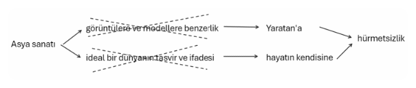
Dolayısıyla Asya sanatının, özellikle Hint yarımadasında yapılan türlerine bakanların, bu sanatları, ilk bakışta "görünenin en mükemmel şekilde temsili" ya da "görünmeyenin idealleştirilmesi" olarak değerlendirebileceğini, ama bunun bu sanatları yönlendiren düşünceleri bilmemekten kaynaklanan bir yanılgı olduğunu ifade eden Coomaraswamy, Hint sanatının Tanrı'nın isimlerinin bir tecellisi olarak algılanabileceğini söyler.
Hint bilgi teorisi, bilinen ile bilen arasında, ani bir kıvılcımla birleşmenin olduğu şeye bilgi derken; sanat, bilen ile bilinen arasındaki bu boşluğun tamamlanmasına hizmet eder.
Coomaraswamy, aynı kitabında Çin sanatından bahsederken, onun da Hint sanatı gibi temel bazı akidelerden hareket ettiğini ifade eder.
Zaten Coomaraswamy, Schuon, Guenon, Nasr, Burckhardt gibi gelenekselci ekol içine dâhil edilebilecekler için, çeşitli form farklılıkları taşısalar da, o formları ortaya koyan vahyi normların aynı olduğu bir düzlemdir kutsal ya da geleneksel sanat.
"Sanat eseri ruhun, hayattaki canlı hareketlerini yansıtmalı, göstermelidir. "30
Coomaraswamy, kitabında bir Çin resim tasnifinden örnek verir.
Üç katmanlıdır bu tasnif.
Birinci katman Tanrısal, İlâhî; ikinci katman Derin ve Esrarlı, üçüncü katman ise Başarılmış olarak addedilir.
İlk katman Çin sanatı için bir ufuk ve insanın hedefi olan bir mükemmellikken,
ikincisi mükemmele yaklaşan bir ustalığı,
üçüncüsü ise maharetliliği ifade eder.
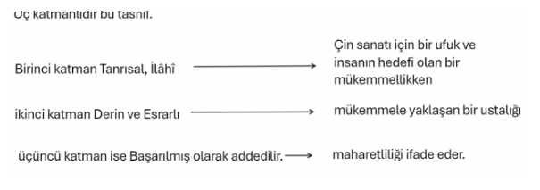
Benzer şekilde Hint sanatında da yaratıcı meleke üç şekilde tarif edilir:
Fitri, edinilmiş ve öğrenilmiş...
Son tahlilde Hint ve Çin sanatının her ikisi de belirli arketiplerden hareket ederler. Ontolojik referans veya ufuk orasıdır.
Hint'in Şiva-Şakti'si, Çin'in Yin-Yang'ı yaratılışın hareket tipleri olarak, Platon'un statik tiplerinden ayrılırlar.
Sanatçının ulaşabileceği, ya da ulaşmayı hedeflediği en yüksek kademe, "ruhun hayat hareketleri şeklinde gösterdiği faaliyetin" gösterildiği sanattır.
***Hint veya Çin sanatının ilkelerine bakıldığında temsilin, nesnenin dış görünüşünden ziyade, onun mahiyet ve hususiyetinin, ya da tasavvuftaki tabiriyle âyân-ı såbitedeki yerinin tespitine yönelmesi gerekir ve bu yönelme bir ufuk, asla tam olarak ulaşılamayacak bir mükemmeliyet olarak tanımlanır.***
"İster oyulmuş, ister boyanmış olsun Hint veya Uzakdoğu ikonu, ne bir hafıza imajıdır, ne de bir idealizasyondur. Fakat sadece matematiksel anlamda ideal olan görsel bir sembolizmdir.
Tanrı'yı insan şeklinde gösteren bir ikon; bir yantra (bir ilahın geometrik temsili) veya bir mantra (bir ilahın işitme yoluyla temsili) ile aynı cinstendir.
İkonun özelliği öncelikle bu şartlara bağlıdır ve gerçekte resme gerçeklik kazandıran unsurun, gözün asli görme melekesi değil, mantra olduğunun farkına varmasak bile, bunu başka türlü izah edemeyiz.
Aynı şekilde Hint ikonu bütün görüş sahasını doldurur.
Her şey eşit derecede açık ve zaruridir.
Göz, ne ampirik görüntüde olduğu gibi bir noktadan diğer noktaya dolaşmak mecburiyetinde bırakılır, ne de mânâ yoğunluğu birtakım kısımlardan ziyade bir kısımda aranmak durumunda bırakılır.
Bir doku veya et hissi değil, sadece metal veya boya hissi vardır."31
Bu pasajdan da anlaşılacağı gibi, Hint veya Uzakdoğu ikonunun amacı aldatıcı bir kopya yapmak değil, sanatın malzemelerinden birisiyle Tanrı'yı hatırlatmaktır Coomaraswamy'ye göre.
İkon bir temsil değil, bir "hatırlatıcı sembol" işlevi görür.
Yantra'nın bile ancak bir mantra olarak anlaşıldığı bir hatırlama mecrası...
Uzakdoğu resminin, Batı resminden farklarından birisi de, bireysel bakışın yerine, çoklu bakışın geçirilmesidir.
Perspektif, Batı'nın rasyonalist/natūralist sanatının alâmetifarikalarından biriyken, rasyonel bireysel perspektif hem Çin, hem de Hint sanatında görmezden gelinir.
Resim sanatı açısından bakılırsa, Avrupa sanatı, nesneleri zamanın içindeki bir anın içinde durdurulmuş bir hâlde temsil ve tasvir ederken, Uzakdoğu resmi bir "durumun" resmi ile ilgilenir.
Nesnelerin "kendi hållerinde oluşlarıyla tasvir der Coomaraswamy, ananevi Avrupa sanatına, nesneleri Tanrı'ya yakın oluşlarıyla tasvir de Uzakdoğu sanatına aittir.
Nesnelerin "kendi hållerinde oluşlarıyla tasvir ananevi Avrupa sanatı
nesneleri Tanrı'ya yakın oluşlarıyla tasvir Uzakdoğu sanatı
Avrupa sanatının nesneleri kendi hållerine bırakışının, aslında tam anlamıyla nesnenin kendi kendisinden kopuşu olarak tanımlanması gerekir.
Zira "kendi" onun ontolojik kaynağı olan ilkesi veya "Kendi" ile birlikte tanımlanmayınca, kendiliğin kendiliğinin tarifi de mümkün olmaz.
Hep bir kendilikten kaçış vardır bu "kendilik"te.
Bu yüzden mimesisçi natüralist sanat, tam da kopya ettiği anda o nesneden kaçışı ve o nesneyi yok edişi ima eder.
nesneden kaçış nesneyi yok ediş
Coomaraswamy, sürekli bir durumun resmi olarak neyin kast edildiği ile ilgili açıklamasında çok önemli bir tespit yapar:
"Mesela Buda Aydınlığa, Işığa (aydınlık, ışık Budizm ve Taoizm'de ulaşılmak istenen nihai hedef, Taoizm'de, evrenin kanunlarıyla ahenk içinde olma hâli; Budizm'de nihai evrensel gerçeğe ulaşma; İslam'da fenafillâh gibi) sayısız asırlar önce ulaştığı hâlde, onun tecellilerine hâlâ ulaşabilmektedir ve öyle de kalacaktır: Şiva'nın dansı ne sadece Taraka ormanında, ne de Cidambaram'da değil, fakat ibadet eden kişinin kalbinde yapılmaktadır. "32
Hıristiyan sanatı, "Oğul"un "Baba"nın bir "imgesi" olarak anlaşıldığı ve insanın da bu imgelem düzeyine katıldığı bir düzlemi temsil eder ve "Tanrı'nın imgesi" olan İsa ve Kutsal Bakire üzerine kurulur.
Hiristiyan teolojisinde "Tanrı insanı kendi suretinde yaratmıştır (Genesis 1:27)" ilkesi uyarınca İsa, Logos olarak bizatihi Tanrı'nın yeryüzündeki "imgesidir", Imge hem benzerliğin, hem de mutlak anlamıyla benzemezliğin de taşıyıcısı olarak insanla, suretinde yaratıldığı Tanrı arasında bağ kurar.
Kutsal imaj İsa'dır.
İkonoklastlara karşı bildiri yayımlayan ve ikonun zaferini ilan eden Yedinci Ekümenik Konsülü, bildirisinde, Hıristiyan ikon sanatının temel çizgisini belirler: "Tanrı, bizatihi, mümkün olan tüm tasvir ve temsillerin ötesindedir; ama İlâhî Kelam beşeri bir mahiyete büründüğüne göre ki o, 'onu ilahi güzellikte doldurarak tekrar kendi asli suretiyle birleşmiştir; Tanrı'ya İsa'nın beşeri görüntüsü (image) vasıtasıyla ibadet edilebilir ve edilmelidir. "33
Titus Burckhardt'a göre bu bildiri, Kutsal Bakire'ye yönelik bir dua şeklini almıştır.
Zira İlâhî Kelam'ın beşeri surete bürünmüş hâli olan İlâhî Çocuk'a kendi etini, kanını veren, böylece de onu duyularımız tarafından algılanabilir kılan bu Bakire'dir.34
Schuon, Rönesans ve sonrasındaki Hıristiyan sanatının fiziksel benzerliği öne çıkaran resmiyle, nesnesine fiziksel olarak değil, ama "sonsuzda benzeyen" erken Hıristiyan sanatının, ilkeleri açısından birbirlerinden ayrı sanatlar olduğunu söyler.35
Hıristiyan sanatı ve ikonu, merkezi noktasına İsa ile Kutsal Bakire'yi alan, çevresel konuları da bu bakışa göre düzenleyen bir sanatken, Rönesans sonrası sanat, Hiristiyan ikonunun bu teolojik mahiyetini göz ardı eder.
İlki insanın "teomorfik" mahiyetini öncelerken, sonraki sadece insandan hareket eder ve her ölçüyü insana göre belirler.
Bu yüzden erken dönem Hıristiyan sanatının imgesiyle Uzakdoğu ikonunun belirli noktalarda benzerlik taşıdığını söyleyebiliriz.
Başlangıçta manevi ve dini bir kaygının tetiklediği ve dikey bir sembolizmle kurulan Hıristiyan sanatının, sonradan bireysel, natūralist veya duygusal bir sanat haline dönüşmesi o sanatın özündeki nüveyi de değiştirmiştir.
Hıristiyan sanatı ve genel olarak sanat hakkında epey yazmış olan Meister Eckhart, sanatın anlamı ve özünün ve sanatçının asıl amacının Allah'ı bulmak olduğunu ifade eder.
Bir biçim ya da form önermeden, sanatçının zihnindeki imge ile ideler âlemindeki "aynılık ve benzerliğin olmadığı durumu birbirinden ayırır.
Hint ve Çin resminin ilkele rinde açıklamaya çalıştığımız "mükemmel ufuk" Eckhart'ın sanatı için de benzerdir.
Aynı şekilde doğadan ya da "manevi ålemden" bir nesneyi ele alacak olan sanatçının, öncelikle bir inziva dönemi geçirmesi gerektiği, sonra ise resmini çizeceği o şey ile "aynı olması" gerektiğini ifade eder Eckhart.
Ancak, bu yine de "gördüğünü" tam hakikatiyle aktarabileceği anlamına gelmez.
Sanatçının zihnindeki imge ile resim tuvalindeki imge, sanatçının yeteneği nispetinde bir "aynılık" taşıyacaktır ancak.
"Estetik ameliye üç aşamalıdır:
1-Fikrin öz (tohum) olarak ortaya çıkışı;
2-aklın gözünün önünde şekillenişi ve
3-çalışma işleminde zahiren ifade edilmesi"36
Tam da bu noktada Coomaraswamy'nin İslam'daki suret yasağı ile Hıristiyan sanatındaki tutumu karşılaştırması bundan sonraki tartışmalarımızda faydalı olabilir.
""İnsanın kendi eliyle yapıp ettiği eserlerde hayat, canlılık yoktur ibaresi Muhammedî âlimlerin temsili sanat resim, heykel vs. yasaklama sebebinin temelini oluşturur.
İslama göre, sanatçı, hayat veren tek güç Allah'la istihza eder gibi sahte mahluklar yaparsa, bu şekilde canlı varlıkların taklit edilmesi büyük günah addedilmektedir.
Bununla birlikte, şu ana kadar gördüğümüz ve daha fazla izah etmeye çalışacağımız gibi, Hıristiyan sanatı ne tabii cinslerin bir taklidinin yapılması, ne de zevk veren hislerin kaynağıdır.
Fakat bir nevi Allah ve Tabiat hakkında konuşma tarzıdır: O'nun isimlerini veya diğer imajlarını kullanarak O'ndan bahsettiğimizde, O'nu gördüğümüzde veya O'nun tadına vardığımızda (lezzetini, hazzını yaşadığımızda) Allah'ın ulühiyet sahasını ne kadar ihlal ediyorsak, Hıristiyan sanatında da Allah'ın ulûhiyet sahası o kadar ihlal edilmiş olur.
Çünkü böyle yaparken 'Allah hakkında hiçbir şey söylenemeyeceğinin', 'Allah'ın isimsiz olduğunun', 'benzerliklerden yola çıkarak O'nu bilmenin mümkün olmadığının' (ki, O, nirabbasa, amurta'dır), 'simsiyah boyanmış bir Seraph - Hıristiyanlıkta en büyük meleklerden birisi - resminin hakiki Seraph'a benzeyiş oranının, Se raph'a benzetilerek çizilmiş bir Allah'ın, hakiki Allah'a benzeyiş oranın dan çok daha fazla olacağının; aksine Allah portresinin yapımında büyük bir benzeyişsizlik olacağının çok açık biçimde farkında ve şuurunda olunmaktadır ve 'Ruha, Üçlü Allah (Baba, Oğul, Ruhü'l Kudüs) ve Bir Allah'ın isimlerine dalıp onlarla haşır neşir olmaktan daha ziyade faydalı olmadığına inanılmaktadır. "
Coomaraswamy'nin Eckhart'tan ilhamla ifade ettiği husus, temel olarak Hıristiyan ve Uzakdoğu ikonuyla İslam sanatı arasında bariz farkı ifade eder.
İslam sanatı daha sonra göreceğimiz gibi, Allah'ın isim ve sıfatlarının Allah'ın Zat'ına tevdi edilme tehlikesi barındıran suretlerin hepsinden kaçınır.
Kaçınma sebebi, sadece Coomaraswamy'nin ifade ettiği, canlılık ve Allah'a eş koşma tehlikesi değildir.
Aynı zamanda, temsil ve suretlerin, Kutsal ile arasındaki benzerlik/benzeyişsizlik ilişkilerinin her türlüsünün, Allah'a ulaştırmak bir yana, onu kısıtlayıp, O'nun hakikatinin unutulması tehlikesini barındırmasından dolayıdır.
***imge veya ikon, temsil ettiği şeyin varlığından çok yokluğunu, çürümüşlüğünü ifade eder. ***
imge veya ikon, temsil ettiği şeyin varlığından çok yokluğunu, çürümüşlüğünü ifade eder.
İslam sanatının, Hıristiyan ya da Uzakdoğu kutsal sanatları gibi, Kutsal olanin madde "düzleminde" ikonografik temsiline teşebbüs etmek yerine, Varlık'ın, temăşă ve teemmül yoluyla sonsuzluk deneyimiyle ilgilenmesinin ana sebebi budur.
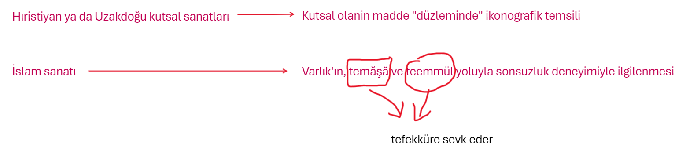
İslam Sanatı ve imge
İslam sanatı, özellikle plastik sanatlar bağlamında kimi ilkeleri ana unsuru yapmasıyla diğer dini/kutsal sanatların tümünün görünümlerinden ayrılır.
Öncelikle bu unsurların ve özellikle literatūre "tasvir yasağı" olarak geçmiş yasağın, sanatta aslında neyi imlediğini tespit etmek ve imgenin İslam sanatı açısından ne anlama geldiği meselesini bunun üzerinden oluşturmak birinci adımımız olabilir.
Islam sanatının ikona karşı duruşu, bir anlamda onun ana çizgisini de belirler.
Titus Burckhardt' in belirttiği gibi ikon, yani ulûhiyetin plastik "temsili", hem İslam tarihinin gelişimi açısından, ama ondan da çok ilâhî olan bir "diyalektiğe göre, izafi olanla Mutlak'ı, yaratılmış olanla Yaratılmamış Olan'ı, birini ötekinin düzeyine indirerek "birleştiren" bir yanlışın ayırt edici alâmeti olmaktadır. 38
Panteizmin ya da hulûlün vahdetü'l vücûd ile ilgisizliği bu cümlelerdeki ince ayrımdan da anlaşılabilir.
Yaratan ile yaratılan ayrımı, İslam geleneğinde, insan, bu ikisi arasındaki berzah olarak, ya da İbn Arabînin tabiriyle âlem aynasının cilası olarak tanımlansa dahi, Zat'ın bir imgede ya da Hıristiyan teolojisinde olduğu gibi bir "insanda" temsilinden, sadece ulûhiyete saygısızlık olarak nitelendirilmesiyle değil, aynı zamanda marifetullah'ın da kaybı tehlikesini de bünyesinde barındırmasıyla uzak durulur.
İslam'ın, vahyin son hâli ve İbn Arabînin ifadesiyle tenzih ile teşbihin birlikteliğinin en kâmil ifadesi olduğu düşünülürse, İslam sanatını, mutlak tenzihi tutum izleyen ikonoklastlardan da ayırmak gerekir.
İslam sanatı, tenzih ve teşbihin mükemmel birlikteliği ve her ikisinin de tevhid alanını tek başına işgal etmeyişleri üzerine kurulur.
Büyük oranda teşbih düzleminde kalan Hıristiyan ve Uzakdoğu sanatı da, teşbihin her türlü düzeyine karşı olarak, imgede temsilin silinmesini, imgenin kendisini yok etmeye kadar götürmüş - mesela modernist soyut sanatın kimi temsilcileriyle Yahudi ikon karşıtlığı - tenzih tutumu da islam sanatının bakış açsından eksiktir.
(İslam Sanatında Tenzîh ve Teşbîh
İslam sanatı, İslam inancının temel ilkeleri olan tenzîh ve teşbîh kavramlarıyla sıkı sıkıya bağlıdır. Bu iki kavram, sanat eserlerindeki sembollerin, motiflerin ve temsillerin yorumlanmasında büyük önem taşır.
Tenzîh Nedir?
Tanım: Allah'ın her türlü noksanlıktan münezzeh ve yüce olduğuna inanma ve bunu ifade etme durumu.
Sanattaki Yansıması: İslam sanatında Allah'ı somut bir şekilde tasvir etmekten kaçınılır. İnsan figürleri genellikle soyut geometrik şekillerle veya bitkisel motiflerle temsil edilir. Allah'ın isimleri ve sıfatları ise, doğadaki güzellikler, geometrik desenler ve Arapça hat aracılığıyla ifade edilir.
Teşbîh Nedir?
Tanım: Allah'ı yaratıklara benzetme veya O'na insanî sıfatlar atfetme eğilimi.
Sanattaki Yansıması: İslam sanatında teşbih kesinlikle yasaktır. Ancak, Allah'ın isimlerini ve sıfatlarını ifade etmek için kullanılan sembollerde, bazen insan veya hayvan figürlerine benzeyen soyut şekiller görülebilir. Bu durum, teşbih olarak değil, daha çok bir sembolik ifade olarak değerlendirilir.
Tenzîh ve Teşbîh Arasındaki İlişki
İslam sanatında tenzîh ve teşbîh arasındaki ilişki, ince bir çizgide yürür. Sanatçılar, Allah'ın yüceliğini ifade ederken aynı zamanda eserlerini estetik açıdan da zenginleştirmek isterler. Bu nedenle, sembolik dil kullanarak Allah'ın isimlerini ve sıfatlarını ifade ederler. Ancak, bu sembollerin asla Allah'a benzetilmediği unutulmamalıdır.
İslam Sanatında Tenzîh ve Teşbîhin Örnekleri:
Hat Sanatı: Arapça harflerin estetik bir şekilde yazılmasıyla oluşturulan hat sanatı, Allah'ın isimlerini ve Kur'an ayetlerini güzel bir şekilde ifade etmek için kullanılır.
Geometrik Desenler: İslam sanatında sıkça kullanılan geometrik desenler, sonsuzluğu, düzenliliği ve Allah'ın birliğini simgeler.
Bitkisel Motifler: Çiçekler, yapraklar ve ağaçlar gibi bitkisel motifler, cennet, güzellik ve hayatı temsil eder.
Mimari: Camiler, medreseler ve türbeler gibi İslam mimari eserleri, Allah'a olan saygıyı ve ibadeti ifade eden geometrik desenler, bitkisel motifler ve Arapça hatlarla süslenir.)
Peki, İslam sanatını genel olarak belirlemiş "anikonizm" ya da daha geniş anlamıyla algılanan tasvir yasağını nasıl anlamalıyız?
İslam dininden hareketle gelişen sanat, açıkça olmasa da, teamüllere dayanarak tasvir meselesine neden sıcak bakmamıştır?
Yine Burckhardt'ın ifade ettiği gibi, temeli "sembolizme" dayanan kutsal sanatın, resim ya da sureti reddetmesi, ilahi şeyleri konu edinen sanata darbe vuran bir şey midir?
Bu noktada belirtilmesi gereken ana fikir, natūralizmin, ya da insan bedenine ait ayrıntıların resim ve heykel ile tasvir edilmesinin, sözünü ettiğimiz gerçeklik hiyerarşisindeki ters yüzlüklerine dikkat edilmesi gereğidir.
Natüralist sanat, ikonlarla Allah'ın ulûhiyetinin ve detaylandıılmış bedenler ve ayrıntılarla da yaratılanın, ilâhî özünü kısıtlama, tek boyuta indirme ve orada mühürleme anlamına gelir.
İnsan özelinde konuşursak, insanın tek boyutlu mekanik "yeniden-üretimi", onun ardındaki ilâhî özü yok eden ya da anlamsızlaştıran ve insanı maddi düzeyin içine sıkıştıran bir işlev görür.
İslam sanatındaki tasvir ve temsil yasağının, diğer tüm tartışmalar dışında ve üstündeki ilkesi budur.
Bu durum, Burckhardt'ın dediği gibi, İslam sanatına bir kısıtlama getirmesi bir yana, onun zincirlerini boşaltan bir işlev görmüştür.
Titus Burckhardt, İslam sanatında ikon karşıt duruşun iki önemli hususla ifade edilebileceğini söyler.
İslam sanatının bu tavrı, sureti, ister istemez sınırlı ve tek yanlı olan bir sanat eseriyle ne taklit edilebilen, ne de zapt edilebilen "Rahmân suretinde" yaratılmış insanın asli saygınlığını güvence altına alırken, öte yandan nispi ve geçici bir tarzda da olsa "put" haline gelebilecek herhangi bir şeyi, insan ile Allah'ın gayb hazreti arasına sokmaz.
Her şeyden önemlisi "Allah'tan başka tanrı olmadığına" tanıklık etmek demek olan şahådettir.
Böyle bir iman ve ikrar ulûhiyetin her türlü objektifleştirilmesini ortaya çıkmadan eritir. 39
Temsil edilen nesne ile onu temsil eden imge arasındaki "açıklık", İslam sanatının her şeyden önce fark ettiği bir şeydi.
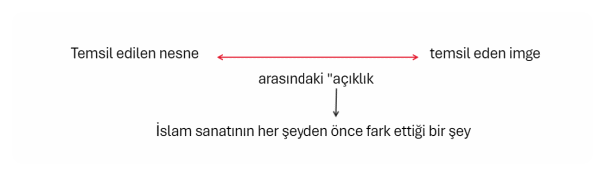
Putlara tapan bir kavme gelmesi ve sonradan puta tapmanın geri gelebileceği endişesinin dışında ve evrensel bir ilke olarak İslam sanatının bu anlayışını özellikle derinleştirmemiz gerekiyor.
Ulûhiyetin "temsili", Hıristiyan sanatında ya da Uzakdoğu ikonunda olduğu gibi, önünde diz çökülen ikon aracılığıyla Tanrı'ya mı götürüyordu insanı?
Dinler ve düşünceler tarihi, bunun böyle olmadığını; aşırı temsil ve teşbihin, tenzih ile dengelenmediğinde puta taparlığa götürdüğünü; aşırı tenzihin, teşbih ile dengelenmediğinde nihilizme ya da Allah inancı kalmamış bir mistisizme götürdüğünü, birçok defalar göstermiştir.
Bu iki ifrat ve tefrit salınımı arasında dengeleyici olarak İslam, hem "Furkan"ın "Kur'an" olduğu haliyle, hem de dengeyi sağlayan orta yoluyla, kâmil bir sanat Formunu da beraberinde getirebilir.
İslam sanatı, özündeki "dikey sembolizmi" yani, Allah'ın isim ve sıFatlarının birer tecellisi olan tabiatın ve insanın manevi özünün Varlık ile ilişkisini derinleştiren sembolizmi dışarıda tutmadan, ama temâşâ, ritm, boşluk ve sonsuzluk üzerine tefekkürü ile Varlık'ın "varlığa" "indirgenme" ve hulûlü yönünde herhangi bir tehlikeyi bertaraf etme kapasitesine sahip olmasıyla, tenzih ile teşbihi bir tevhid ikliminde cem eder.
Ne aşırı tenzihin nihilizmine/agnostisizmine kapı aralar, ne de aşırı teşbihin putlarına tevessül eder.
aşırı tenzih nihilizmine/agnostisizmine kapı aralar.
aşırı teşbih putlara tevessül ettirir.
Tenzihte teşbih, teşbihte tenzih eder.
""O'nun benzeri gibi yoktur' ifadesinde bir yandan benzerin ispatı, Öte yandan reddedilmesi söz konusudur.
Bu nedenle Hz. Peygamber, 'Bana cevamiü'l-kelim [bütün hakikatleri toplama özelliği) verildi' demiştir.
Hz. Muhammed (a.s.) kavmini gece ve gündüz davet etmedi.
Tam tersine o, gündüz içinde gecede ve gece içinde gündüzde davet etti."
İslam sanatının natüralist sanatın bir "üstünlüğü" olarak addedilen perspektife yönelik tutumu, özellikle Uzakdoğu ve Hıristiyan geleneksel sanatlarıyla uyumluluk arz eder.
Her üç geleneksel sanat da, perspektifin, bireyin gözünün merkez edinildiği bir rasyonelleştirilmesine itiraz eder.
Sanat tarihinde genellikle Batılı sanatçıya bir "üstünlük" olarak atfedilen "perspektifi bulmuş olma" meselesi, başlı başına bir insan, sanat ve kâinat anlayışı meselesidir.
Perspektifin Rönesans resmiyle birlikte natüralist düzenine kavuşmasıyla, Rönesans ve sonrasında gelişen düşüncelerin paralelliği asla gözden kaçırılmamalıdır.
Bireyin "yaratılışı" ve o bireyin bireysel görüş ve perspektifinin her türlü hakikat iddialarının ana merkezi haline gelmesi, resim de perspektifi yaratan unsurların başında gelir.
Yoksa diğer medeniyetler içindeki sanatçıların "bulamadığı" bir şeyi bulmuş değildir Rönesans sanatçısı.
Tam tersi; perspektif, zaten tümüyle mekanik bir gözlemle keşfedilebilecek bir şeydi.
Ancak ne Uzakdoğulu ressam, ne Ortaçağ Avrupa kutsal sanatı sanatçısı, ne de İslam'ın en önemli "figüratif sanatı" olarak değerlendirilebilecek olan minyatür sanatının ustaları, mekanik perspektifi önemsediler.
Onlar için bireyin gözünden hareketle düzenlenen bir dünya değil, tüm ilâhî düzen içinde önem sırasına göre düzenlenen bir dünya önemliydi.
Bu yüzden mekanik bir yeniden üretim olan perspektif yerine, âyân-ı sâbitedeki ilk örneklerinden hareketle belirlenen bir hakikat görünümü İslam sanatının ana karakteriydi.
Yine Burckardt'ın sözleriyle söylersek, niceliksel dünyanın belirlemelerini değil, niteliksel olarak belirlenen bir kozmosu önemsiyordu onlar.
Perspektif, aynen yukarıda sözünü ettiğimiz ve mekanik yeniden Üretim olarak değerlendirilebilecek olan natüralist tasvir gibi, temāşa, teemmül, tezekkür ve tefekkür yerine, mekanik natūralizm/rasyonalizmin çıktısı ve görünümüdür.
Perspektifin İslam figüratif sanatındaki ihlali, mesela minyatürlerde, eşyanın değişmez özünün yakalanmasına yönelik bir mükemmelliğe ve âyân-ı såbitedeki arketiplerin yakalanmasına yönelik bir çabaya dönüşür.
İki boyuta indirgenmiş ve orada yok edilmiş bir hakikat yerine, artık hakikatin tüm yönelimlerini teFekkür ettiren bir temâşā söz konusudur.
Bireysel perspektifin ihlali ve özne-bakışı yerine "Tanrı-bakışı"nın ikame edilmesi isteği, daha sonra göreceğimiz gibi İslam sanatı ile sinema arasında kurmaya çalışacağımız köprünün ana direklerinden birisi olacaktır.
İslam sanatının, sinemayla buluştuğu yer, bireyci, hümanist ve rasyonalist mekanik yeniden üretimden kaçıp tümüyle bir temăşă, ritm ve tefekkür sanatına adım atmaya elverişliliğidir. "...
O bir temaşa ya da teemmül durumunun son derece sessiz, adeta bir dışavurumdan başka bir şey olmayabilir.
Ve bu durumda hiçbir fikri yansıtmaz, fakat insanı kuşatan şeyleri cazibe merkezleri gayb olan bir denge içinde dağıtarak niteliksel olarak dönüştürür...
Onun nesnesi, her şeyden önce insanin çevresidir ve onun niteliği özü itibariyle temâşacıdır."
İslam sanatının, plastik sanatlarda, mimaride ve hatta müzikteki görünümüne baktığımızda temel birkaç şeyle karşılaşırız.
Burckhardt'ın da belirttiği temăşă, temâşâyı mümkün kılan ebediyet, zaman, an, çöl ve boşluk kavramları...
Bunlarla birlikte, İslam sanatı, temâşăa yapısı içinde bir ritme sahiptir.
Temăşă ve ritm, eşyanın tüm görüntüsünü ve hakikatini iki boyutta "ele geçirme" sevdasından vazgeçirerek, hakikatin görünümleriyle birlikte oluş içinde varolmaya niyetlenen bir üsluba doğru yöneltir sanatçıyı.
Burada önemli bir noktayı da göz ardı etmemek gerekiyor.
Batıda genellikle natüralizmin ve rasyonalizmin bir karşılığı olarak görünen "gerçekçilik" ile İslam sanatının, Burckhardt'ın "manevi gerçekçilik’’ olarak tanımladığı duruşu arasında da çok temel ayrılıklar mevcuttur.
Aynen soyutluk ya da sembolizm anlayışlarında olduğu gibi, gerçekçilik düzeyinde de bir ters yüz edilmişlik vardır.
İslam sanatı ile Rönesans sonrası Batı sanatı (hatta modernist soyut sanat anlayışı da dahildir buna) arasında.
İmgeden kaçışın sinemasının kitap boyunca tartışılacak meselelerine kısa bir giriş yapmadan önce İslam sanatında yanlış anlaşılan ve yanlış anlaşıldığı için de doğru soruları sormamıza engel olan kimi yanlış soruları ele almamız gerekiyor.
İslam Sanatı Meselesinde Yanlış Sorular
"Bilim, şeylerle oynar; onlarda olmaktan vazgeçer. Kendine şeylerin içsel modellerini verir ve onların tanımlarının olanaklı kıldığı değişiklikleri bu göstergeler ya da değişkenler üstünde gerçekleştirerek, şimdiki dünyayla ancak uzaktan uzağa karşılaşır. Hayran olunacak şekilde etkin, ustalıklı, serbest bir düşüncedir o; her varlığı "genelde nesne" olarak - yani hem bizim için hiçbir şey değilmiş hem de yine de yapaylıklarımıza ayrılmış bir şeymiş gibi- ele alma kararıdır."
Göz ve Tin/Maurice Merleau-Ponty
Modern bilimin nesnelere yaptığı şeyin, bu bilimden "esinlenen" (ya da tersi) sanatın ana çıkış noktası olduğunu görmek, Müslüman sanatının nasıl bir farklılık üzerine bina edildiğini anlamak için elzem. "Nesnelerde olmaktan vazgeçen" modern bilim ve sanat, onları, tahakküm edebileceği, tanımlayabileceği "köleler" hâline dönüştürür.
"Onunla olmak" yerine "onu 'ben'imden hareketle tanımlayıp dönüştürmek" modern bilim ve sanatın ana hareket noktasıydı.
Sanattan bilime hayatın ve bilginin tüm alanlarına sirayet eden "dünyayı cogito'nun bakışına indirgemek" düşünce ve eylemi, sömürgeciliğin her türlüsünü yaratan bir hegemonya aracı olarak sanatı öldüren şeydi aynı zamanda.
Hâlin sanatı yerine, tanımlayıp sömürge kurmanın sanatı...
Sadece nesneyi değil, "öteki" olan her şeyi sömürgeleştirmenin...
Müslüman sanatın imkânı üzerine düşünmek, öncelikle soru sorma melekelerimizi ??? harekete geçirmekle ilgili.
Yüzyıllardır, sadece sanat üzerine değil, düşünce ve hayat üzerine "sormamız istenen" soruların bizi çıkardığı çıkmaz sokağın farkına varmak, "yanlış soruların" tespit edilmesi ile mümkün.
Soru, ardından gelecek/gelmesi beklenen cevabın yolunu belirleyen tüneldir.
Yanlış soruların, doğru yöne götürmesi mümkün değildir.
Ancak, yanlış soruların, yüzyıllardır kökleşmiş bir algı ve düşünme biçiminin bir birikimi olduğu düşünülürse, yanlışı tespit etmenin zorluğu çok daha net anlaşılır.
Üstelik yanlış soruların tespit edilmesinin, doğru sorular sormanın önünü açacağı umudu da şüphelidir.
Zira yanlış sorunun tespit edilmesi kapsamlı bir eleştiri ve temel-yıkma becerisi/birikimi ile ilgiliyken; doğru soru sormak, bizatihi bir temel inşa etmenin başarılmasıyla mümkün olabilecek bir şeydir.
Müslüman bir sanat, öncelikle bu sanatın nasıl bir yönü olduğunun ve "anlamının" tespit edilmesine engel olmuş "yanlış soru" ve "algıların belirlenmesiyle mümkün.
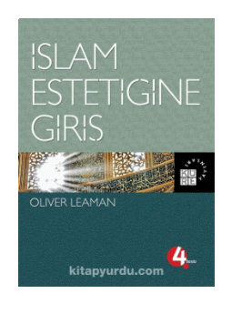
Mesela Oliver Leaman, Islam Estetiğine Giriş kitabına Müslüman sanat üzerine "yanlış algı" ve "bilgileri" temizleme iddiasıyla başlasa da, soruları temel olarak "yanlış" bir merkezden hareket ettiği için, İslam sanatı üzerine doğru bir menzile yol alabilmesini sağlayacak "doğru zemini" de kuramıyor.
İslam sanatı ve estetiği üzerine yazılmış pek çok kitapta, benzer sorunların bulunması, sadece doğru soruları sormanın değil, aynı zamanda "yanlış soruları" tespit etmenin de ne derece zor olduğunu gözler önüne seriyor.
"Yanlış sorular" üzerine düşünmeden önce, Leaman'ın, "yanlış algıları" tespit etmekle ilgili önemli çabasındaki kimi problemlerinin "kökenlerini" anlamamız gerekiyor.
Leaman, "İslam'ın bir tanımı/özü vardır" iddiasına, böyle bir özün mümkün olmadığını tespit etmekle başlıyor.
Bu yaklaşım, Leaman'ın sonraki "yanlış kırıcı" tavrının temelini anlamak için önemli.
Zira Leaman, Nasr, Burckhardt gibi, İslam sanatının "temelini" İslam'ın muhkemliğini öne sürerek Kâbe olarak belirleyenlere karşı, post-modern dönemlerin moda yaklaşımı olan ve sabit bir hakikat yerine, "oluşun içinde yok olan" uçucu/kayıp/olmayan hakikat nosyonuna yol açan bir "merkez" belirliyor kendine.
İslam'ın, sanatına da sirayet eden bir ilkesi olduğu ve bu ilkenin, elbette muhkem bir din anlayışından doğduğu iddialarına karşı, tüm yanlış soruların merkezini oluşturan bir iklime davetiye çıkarıyor.
Dolayısıyla, İslam estetiği ve sanatı adına yanlış algıları tespit etme iddiasıyla başlayan bir reddiye, bu sanatı var eden ve bu sanata ruhunu veren ilkelerin reddiyesine dönüşüyor.
Leaman'ın "yanlış algıları tespit etmek için kullandığı çıkış noktasını, temelde post-modern anlayışlarda görünen ve sanatı belirli bir üst ilkenin surete bürünen häli olarak değil de, dünyanın her yanındaki "sanatçıların" hemen hepsinde benzer şekilde ortaya çıkan "uçucu" başka bir şeyi ima etmesi, yanlış algıları tespit etmenin önündeki engelleri de ifşa eder mahiyette.
Her ne kadar, bir sonraki "yanlış algıyı tespit ederken örnek verdiği Grabar'ın, belki de Islam sanatı hakkında muhkem bir "anlam ufku" kurmanın "cüretkarlığını" kabul etmemekten kaynaklanan "İslami estetik diye bir şey yoktur" tezine destek olabilecek tespitlerine küçük de olsa bir itiraz geliştirse de, aslında Leaman'ın yaptığı şey, zaten Islam estetik ilkelerinin reddiyesine yol açtığı için Grabar'ın tespitlerinden çok daha yıkıcı bir mahiyet arz ediyor.
Grabar, İslam sanatı üzerine yazdığı yazılarında, temel olarak "anlam" üzerinde değil de, biçim ve içerikle ilgili tarihi bağlamlara ve sanatın malzeme ve teknikle ilgili yönelimlerine eğilir.
Bu da Grabar'ın yaklaşımını "dışarıdan" ama yine de samimi bir teknik bakışa ve elbette anlamla ilgili hüküm vermeme davranışına yöneltir.
Ancak Leaman, Grabar'ı haklı olarak eleştirirken de, aslında çok temel bir "yanlış soruya "zemin hazırlar.
İlk kısımda anlattığımız yanlış soru burada da aktiftir ve o sorunun geldiği zemin, hüküm verme konusunda Leaman'ı eleştirdiklerinden çok daha cüretkår kılar.
Grabar, pek fazla "anlam hükmü vermezken, Leaman'ın yaklaşımı, anlamın yokluğunu/ya da çokluğunu/uçuculuğunu ilan edecek ya da temel bir bireysel çıktıya indirgenebilecek bir şekle dönüşme tehlikesini barındırır.
Leaman, sözünü ettiğimiz kitabında, İslam sanatının tasavvufi olduğu tezine yönelik de kimi itirazlar geliştirir.
Elbette İslam samatı tüm ürünleriyle tasavvufi bir mahiyet arz etmez; ancak tasavvufun, İslam'ın irfan tabakası olması ve o irfanın, ahkâm ile marifet arasında kurduğu ilişkinin aynı zamanda sanattan musikiye, ticarete, siyasete kadar hemen her alana bir hakikat damgası vurmayı amaçladığı gerçeğini tespit etmek gerekiyor.
Leaman bunu yapmak yerine, tasavvufu, belki de "soruyu sorduğu" zaviyenin post-modern doğasından olsa gerek, bir "ne olsa gider uçuculuğuna ve içi boş bir hoşgörüye indirgeyerek, İslam sanatının tasavvufi olduğu iddiasının, tasavvufun "çoğulculuğu sebebiyle bizatihi mutasavvıflar tarafından reddedileceği hükmüne variyor.
Leaman'ın "yanlış algıları tespit etme noktasındaki çıkış noktasının kilit kelimesi bu "çoğulculuk" kelimesinde gizli.
Zira Leaman, kendisini post-modern bir eleştirmen olarak tanımlayabilmemize imkân verecek şekilde, İslam ve tasavvuf hakkında post-modern hükümler veriyor.
Verdiği hükümler, üstü kapalı da olsa, "anlamın ve hakikatin elle tutulan, yakalanan bir şey değil; uçucu olan, belki de insan ve dinler tarafından asla yakalanamayacak olan" bir mahiyet arz ettiğini ifadeye kadar varıyor.
Tasavvuf, basitçe post-modern bir "çok-kültürcülüğe" veya "hoşgörülü çoğulculuğa" indirgeniyor; İslam ise, türlü çeşitlerde algı ve eylem biçimleri taşıdığı için, "özü" ve "temel ilkesi" olmayan bir "her şey gider dinine" indirgeniyor.
Leaman'ın bu yaklaşımını, kitabın giriş kısmında ardı ardına sıraladığı hemen her tartışmada görmek mümkün.
Tabiri caizse, İslam sanatı hakkında "put kırıcılığa" soyunan Leaman, tezini, o sanatın "evrensel insan psikolojisinin düzeyinde diğer tüm sanatlarla aynı şey olduğu noktasına kadar taşıyor.
İslam sanatı ve resim meselesi, tartıştığımız bu yaklaşıma örnek olması açısından önemli.
Leaman, tartışmasına İslam sanatında belirli bir imge ve ikon yasağı olmadığı hükmünü, bu iddiaların daha önce tartıştığı kimi özcü varsayımlar olduğunu iddia ederek pekiştirmeye çalışıyor.
İslam sanatı ve imge meselesi, elbette Kuran ve Sünnet ile kolaylıkla belirlenebilecek bir yasak taşımıyor.
Ancak, bu durum, yine Kuran ve Sünnet'in belirlediği kimi ilkelerin, böyle bir temayülü doğurduğu gerçeğini inkâr etmemize yol açacak bir durum değil.
Islam sanatının ikona karşı duruşunun, bir anlamda onun ana çizgisini belirleyen bir zemin olduğunu tespit etmemiz gerekiyor.
Bu mesele, bu bölümün önceki sayfalarında detaylıca ele alındığı için kısaca atlanabilir.
Leaman, Islam sanatı içerisinde değerlendirdiği İslam ülkeleri sanatlarında gördüğü kimi "resim" örneklerinden hareketle imge yasağı meselesine bu şekilde hüküm vererek bakıyor:
İmge ya da tasvir yasağı yoktur! Ancak, başta Titus Burckhardt ve Seyyid Hüseyin Nasr gibi gelenekten hareketle sanata bakan düşünürler, zaten kutsal sanat ile dini sanatı birbirinden ayırır ve geleneksel olanın, belirli bir "üst-ilke den hareket ettiğini ve bu yüzden konusunun dini olmasının gerekmediğini ifade ederler.
Bir sanat eseri, mesela Leaman'ın ele aldığı türden bir "ilkesizlik üzerinden dini bir konuyu ele alması hasebiyle dini sanat olarak tanımlanabilir; ancak İslam sanatı adını verdiğimiz şeyin, böyle bir dini sanattan çok, kutsal bir sanat olarak belirli bir üst ilkenin ete kemiğe bürünen häli olduğu ayrımıni belirlemek, Leaman'ın tam olarak nerede yanlış yaptığını da açıklar mahiyette...
Metindeki Ana Fikirlere Genel Bakış:
Leaman'ın Yaklaşımı: Leaman'ın sanat anlayışında, dini konuların ele alınış biçimi daha çok bir eleştiri veya sorgulama üzerine kuruludur. Bu nedenle, sanat eseri dini bir konuyu ele alsa bile, bu ele alış biçimi nedeniyle "dini sanat" olarak tanımlanabilir.
İslam Sanatı: İslam sanatı ise daha çok "kutsal bir sanat" olarak nitelendirilir. Burada sanat, sadece bir konuyu ele almakla kalmaz, aynı zamanda kutsal bir ilkenin somutlaşmış halidir. Yani sanat eseri, sadece bir ifade aracı değil, aynı zamanda bir ibadet ve ibadete vesile olma işlevi görür.
Leaman ve İslam Sanatı Arasındaki Temel Fark:
Amaç: Leaman'da amaç, dini konuları ele alarak sorgulamak ve eleştirmek olabilirken, İslam sanatında amaç, Allah'ı anmak, O'na yaklaşmak ve ilahi güzelliği yansıtmaktır.
İçerik: Leaman'ın sanatında dini konular, daha çok insan merkezli ve bireysel deneyimler üzerinden ele alınırken, İslam sanatında ilahi sıfatlar, Kur'an ayetleri ve peygamberlerin hayatı gibi kutsal metinler ve kavramlar merkezdedir.
Form: Leaman'ın sanatında ifade özgürlüğü ön plandayken, İslam sanatında belirli estetik ve sembolik kurallar ve gelenekler vardır.
Leaman'ın, kitabın giriş bölümündeki "put kırıcı" tezleri, aslında gerçek putun tam olarak nerelerde olduğu hakkında epey ipucu veriyor.
Özellikle her alanda gördüğümüz bir post-modern "çoğulculuk" kibrinin, hemen her şeyi sakatlayan bir tekilliğe yol açtığını ifşa eden bir durum Leaman'ınki...
Zira özellikle liberal kibrin zehirlediği, "doğru soruların" sorulacağı zemini ve o soruların içeriklerini belirleme hakkını kendinde gören bir "modern Batılı tutum, temel olarak araştırdığı her alana bir tanım dayatıyor.
Üstelik tanımlamalara karşı çıktığı varsayımında bulunurken bile bunu yapıyor.
Önce tanımlıyor; sonra tanımladığı şeyi üstünüze giydirmeye çalışıyor; en sonunda da "tamam, artık bu sen oldun!" diyor...
Modern ve ultra/post-modern Batılı tutumlarının hemen hepsinde gizli ya da açıktan beliren şey tam da bu.
Bizim ve bizim gibi ülkelerdeki "düşünürlerin" hareket sahasını belirleyen bir şey bu.
Sorular bile artık belirlenen havuzdan sorulmak zorundadır.
O havuzun dışarısına çıkılma girişimleri, entelektüel aforoz tehlikesini bünyesinde barındırır.
Biz yine de kimi "yanlış sorular" üzerine bakışlar geliştirmeye çalışalım.
Yanlış soruların, doğru sorunun da doğru bakış ve düşünüşün de önündeki en büyük engel olduğunu düşünürsek, bu girişimin, temelde yanlış argümanlar taşıma riskine rağmen olması gereken hayati bir yaklaşım olduğunu tespit ederek Peki, Müslüman sanatın imkänları hakkında ne tür yanlış sorular soruluyor?
1. Sanat toplum için midir, yoksa sanat sanat için midir?
Sanatın, özellikle moderniteyle birlikte hayatın içinden çekilip müzelere tıkılmasıyla ve estetiğin felsefi bir disiplin olarak, sadece "güzellik" ile ilgilenmeye başladığı zamanlardan beri, ortaya çıkan bu tuzak soru, sanatın hakikatte ne olduğuyla ilgili soruları hep bir sonraki aşamaya erteleyen bir tehlike barındırıyor.
Müzelere tıkılan sanat, öncelikle kendine has bir iktidar ve büyü alanı oluşturuyor.
Modernitenin bilimcilerine benzer bir başka kast daha oluşuyor ve bu kastta sanat, anlam ve amacını bizatihi kendinde taşıyan bir surete bürünüyor.
Ideolojik ikizliklerin ortaya çıkardığı diğer anlayış (ki şık muhalefettir bu) da genellikle sosyalist/toplumcu sanat akımlarında kendini ifşa eden, "sanatın toplum için olduğu" iddiasıdır.
Bu ikilik, kendi içinde iki tür anlayış oluşturmuş, (liberalizm (kapitalizm)/sosyalizm) ikisi birlikte aynı şeyi besleyen ve modern zihin ve eylem biçimlerinin sarmalını oluşturan yanlış sorular yaratmıştır.
"Sanat sanat için midir; yoksa toplum için midir?" sorusu, sanatın asıl amacını gizlemeye yarayan bir alet kutusu anlamına gelir aynı zamanda.
Kartezyen cogito'nun merkeze aldığı "düşünen modern insanın, daha önce merkezde olanı maharetle dışarı atması ve o "eski merkeze ait olan her şeyin, felsefeden sanata, politikaya kadar bir kafese tıkılmasını doğuran sebepler, aynı zamanda "unutturma/hatırlama" dengesini, cogito'nun egemenliğindeki bir çarpık diziye dönüştürür.
Artık sanatın, ya "bireysel saplantılı ve o saplantıların ürettiği bir "kendinde şey" olarak görülmesi ve o yönüyle dokunulmazlik kazanması gerekecek; ya da sanat, toplumsal bir "kolektif kendi"nin hizmetine girecektir.
Böylece üçüncü seçenek veya tüm seçenekleri kendi bünyesinde barındıran hakikat seçeneği yavaşça ortadan kalkacaktır.
Müslüman, "sanat toplum için mi, sanat için mi?" sorusunu sorduğu andan itibaren, sanatın "nereden geldiği" ve "nereye gittiği" meselesini ebediyen görüş alanından çıkarmış demektir.
Halbuki sanat, Allah'ın insana verdiği bir hakikat yüküdür ve o hakikat yükünün farkına varan sanatçı için, sanatının "düzeyini belirleyecek ve onu "aynı zamanda kendi için de" yapacak olan şey, bu hakikat yükünü taşı madaki becerisidir.
"Anladım işi, sanat Allah'ı aramakmış/Marifet bu, gerisi yalnız çelik-çomakmış"
Hakk için olanın aynı zamanda halk için olduğunu ve Hakk'ın, halk/ kainat ve insan bağının düğüm noktasını oluşturduğunu ifade eden bir medeniyetin mensubu için, sanatı sanat yapan ve onu "bizatihi kendi için de kıymetli yapan şeyin tam da bu özelliği olduğunu tespit etmesi o kadar zor olmasa gerek.
Artık bu tip bir insan için, sanatın sanat için mi yoksa toplum için mi olduğu sorusunu sormak abesle iştigal etmek anlamına gelecektir.
NOT: Sanat toplum için midir, yoksa sanat sanat için midir? Hakk için olanın aynı zamanda halk içindir.
Zira bu ikilinin ve bu ikiliyi bağla yan "asıl Hakikatin" birbiri ile ayrılamayacak kadar derin bir bağı vardır.
Ayrımlaştırma, bõlme, parçalama uygarlığı olan modern Batı uygarlık ve sanatı için gerekli ve doğru bir soru olabilir; ama islam sanatı dahil hiçbir kadim ve kaim sanatın ne olduğunu açığa çıkarabilecek bir soru değildir bu.
2. Sanat bireysel midir, yoksa toplumsal mı?
İlk sorudakinde olduğuna benzer bir "parçala(n)manın" ürünü olan bu soru, sanatı belirleyen, üreten, yaratan şeyin tam olarak nasil ve kime ait olduğunu düşündüren bir soru olması hasebiyle üzerinde durulmaya değer.
Hakiki bir Müslüman sanatçıyı, medeniyetin iklim şartlarını belirlediği gelenek toprağının üzerinde yetişen biricik çiçek olarak tanımlayabiliriz.
İslam medeniyeti, Allah'ın (c.c.) Varlığı olmadan anlam ve eylemi olan bir şey değildir.
Dolayısıyla Müslüman sanatçı değişik biçimlerde de olsa vahyin ve Allah'ın inayetinin etkisinde bir "Müslim" demektir.
Teslim olmuştur kendisine verilen "hediyeye".
Hediyeyi "kendi nefsinden/aklından" bilmez.
Kendinden bilirse, önce hayatını sonra da sanatını yitireceğini bilir.
İlham ve hayal tam da bu mertebede ontolojik bir geçiş alanı olarak işlev görür Müslüman sanatçı için.
Onun için sanat, kişisel seyr u sülük'unun bitiştirdiği bir meydan muharebesidir.
Nefsiyle muharebe ederek ruhunun/akleden kalbinin/canının mertebesine ve oradan da Hakk'ın isim ve sıfatlarının tecellilerine "ulaşan" ve oradan da Hakk'ın halk'a hediye ettiği hakikat perspektifini ifşa eden bir "dolaysızlık sanatçısıdır" o...
Dolayısıyla Batılı modern sanatçı gibi "bireysel" olamaz Müslüman sanatçı.
Zira bireysel yaklaşımın "hediyeyi kendinden bilmek kibrine" yol açacağını bilir.
Onu yetiştiren gelenek ve medeniyet iklimlerinin farkındadır.
O iklimleri yeşertenin Ne olduğunun da...
Toplum, medeniyetin bir unsuru olarak onu besler, bireysel seyr u sülük'u da, sanatçının, onu besleyenin yüreğine açacağı iz anlamına gelir.
"Fert", "halk" ilişkisinin ancak ve ancak Hakk'ın merkezliğinde belirlenebileceği bir besleme ağıdır bu.
Parçalayan modernitenin anlayamayacağı bir bağ...
Aynı şekilde sosyalist sanatçı gibi "toplumu verili bir kendilik olarak gören" birisi de olamaz Müslüman sanatçı.
Ferdin de toplumun da ancak Hakk ile ve O'nun Varlığı ile birlikte var olabileceğini ve tüm sanatların merkeziliğinin, sanat ister ferde, ister topluma yönelsin, O'ndan hareketle belirlenmesi gerektiğini bilir...
3. Sanatçı özgür müdür, yoksa bağımlı mı?
Tarkovsky, sanatçının özgürlüğünden bahsedenlere çok şaşırdığından bahseder Mühürlenmiş Zaman'da.
"... Sanatçılar nasıl olur da mutlak yaratma özgürlüğünden söz ederler bir türlü anlayamam. Bence, durum tam tersi: Kendini yaratıcı eylemin içine atan herkes birden kendini görevlerine, sanatçı yazgısına sayısız iplerle bağlı bulur. Her şey ve herkes birtakım zorunlulukların eseridir. Bir insanın gerçekten tam bir özgürlük içinde yaşayabileceğine inanmak derin su balığını karada gördüğüne inanmaktan farksızdır."43
Sanatçı hiçbir dizgini olmayan bir "fantezi esnafı" mıdır, yoksa kendisini "bağlayan" kimi unsurlarla dünyevi olanın bağlarından kurtulan birisi midir?
Asıl sorumuz bu olmalıydı oysa.
Yine ideolojik/siyasal yaklaşımların egemenliğinde kısırlaştırılan bir bakışın ikilemini ifade eden özgürlük ya da bağlılık meselesi, sanatçıyı bir dikotomi içerisinde kısırlaştırmanın adı aslında.
Bir yanda propagandayı sanatının temel direği haline getirmiş olanlar, öteki yanda da "dizginsiz fantezilerini ve çoğu post-modern kitch eserlerde gördüğümüz bir sapkınlığı "sanatçının özgürlüğü olarak sunanlar...
Liberal düşüncelerin çok temel bir kurnazlığı ya da cehaleti ile karşı karşıya kaldığımız bir soru bu!
Ya bağımlı olup propaganda yaparsın, ya da özgür olup nefsinin en alt katmanlarının fantezilerini sanat diye "satarsın".
Halbuki geleneksel sanatların ve İslam sanat biçimlerinin olduğu türden bir üçüncü seçenek mevcuttur.
Müslüman sanatçı, ilkeleri ve o ilkeleri belirleyen medeniyet/gelenek toprağının beslediği unsurlar açısından o kadar da "özgür" sayılmaz, liberal anlamıyla ele alırsak.
Ancak, hakiki sanatın düşebileceği bir yer olarak kendisine alternatif olarak sunulan propaganda sanatı da asla onun kabul edebileceği bir yaklaşım değildir.
O, özgürlüğün de bağlılığın da vahye dayalı formlarını bulan ve buradan hareketle "biricik" olabilecek yeni formlar arayan insandır.
Dolayısıyla ilkeler için özgürlükten bahsetmek, tam da liberal çukurların çektiği tuzaklardan birisi olarak değerlendirilmeli.
Nefsin dizginlerini sonuna kadar bırakmanın özgürlük olarak tanımlandığı bir dünyada, özgürlük denen şeyin Hakk'a kullukta olduğunu bilen Müslüman sanatçı için aksi düşünülemezdi zaten!
Yani sanatçının özgürlüğü meselesini soru(n) edenlerin öncelikle o kavramların ve o kavramların zemininin "yanlışlığının" farkına varması gerekiyor.
4. Sanat devrimci/muhalif midir, yoksa muhafazakar mı?
Genellikle Batıcı aydınlarımızın ve onların taşeronluğuna soyunmuş kimi Müslümanların sıkça ifade ettiği şeydir "sanatçı muhalif olmalıdır sözü.
Bu, sanatı daha önceki bölümlerde ifade ettiğimiz türden bir siyasi/toplumsal dikotomiye mahkum etmek anlamına gelir.
Üstelik aynı şeyi, sanatın sadece toplum ve siyasetle ilişkisi açısından değil, aynı zamanda sanatsal formlar açısından da ele alabiliriz.
Bu soruya hangi tarafa yaklaşarak cevap verirsek verelim, bir tuzağın içerisine çekildiğimizin farkına varmayız genellikle.
Siyasi/toplumsal muhalifliğin başlı başına bir "değer" taşıyan özcü bir kavram olarak ele alındığı sol jargonların içi boşluğu bir yana, muhafazakar tarafta da benzer bir yaklaşımın olduğunu tespit etmemiz gerekiyor.
Bir yanda "belirlenmiş" form ve yaklaşımlar dışında herhangi bir şeyi Islami görmeyenler (film sanatı İslam açısından yasaktır hükümleri mesela), öte yanda salt karşı çıkmaya üstün bir sanatçılık değeri biçildiği türlü pespayelikler...
Sorunun tuzağının ne derece güçlü bir vakum olduğunu buradan da anlayabilirdik.
Peki, sanat, neyi muhafaza eder, nerede "devrimci" ya da muhaliftir?
Sanat, kendisini ontolojik olarak üst konumlara taşıyacak olan "ilkelerini muhafaza etmelidir.
Mevlânâ Hazretleri'nden ilhamla, pergelin ucunu dayadığımız muhkem noktanın "korunması" elzemdir.
Zira o muhkem noktayı kaybetmek, hayālin en düşük mertebelerine ve giderek nefs-i emmare'nin "fantezilerine" açar sanatı.
Sanatın "yükselme" iştiyakı bu şekilde öldürülür.
Mesela vahyin üzerine konumlanmayan, etik, epistemolojik ve ontolojik açıdan "bağlayıcılıkları" olmayan sanatın, yükselmek bir yana, özellikle modern ve post-modern Batı sanatının iyice çukura düşen yönelimlerinde gördüğümüz türden çürütücü/dekadan bir bakışa tutsak olması mukadderdir.
"Bağlanmak" denen şeyin, "kendine verilen hediyeyi kendinden sanan "sanatçıya" çok hoş gelmediğini söylemek lazım.
Muhaliflik denen kendinde şey"e bu kadar büyük önem atfedilmesi de bu kibirle ilgili.
Sanat eserinin hakikat boyutu ne kadar zayıf olursa olsun, tek başına muhalif olmanın değer kazandırdığı bir sanat dünyasının, sanatı ne kadar anladığı meselesi, bu yanlış soru etrafında tartışılması gereken en önemli meselelerden birisi.
Zira bugün kendine sanatçı diyen çoğu insanın yaptığı şey, kibirlerinin kışkırtmasının şehvetli bir teşhirinden başka bir şey değildir.
Bu tür "sanat eseri" ortaya koyan "sanatçı" için, "aykırı", "deneyci" olmak bir gurur vesilesi, "bağlayıcı ilke ye sahip olmak" ise "gericiliğin" göstergesidir.
Kibrin sanatı ile "ontolojik tevazuun" sanatı birbirlerinden çok farklı şeylerdir.
İlki, kendisine verilen-varsa-"yeteneği" kendinden bilir ve sanatın "yukarı" çıkması için mecburen "muhafaza etmesi" gereken yönlerini çözerek, mutlak bir sarhoşluk içinde batağa saplanırken; diğeri "emaneti Verene" ihanet etmemenin "kurallarını" keşfetmeye çalışır.
İkincisinin sanatı, sanatını keşif yolculuğu olurken, aynı zamanda varlığın gizlerinin de keşfine vesile olur.
Bu tür sanatçı, "İlkeye bağlanmanın, onu diğer tüm bağlarından çözeceğini fark eder.
İşte "gelenek" olarak tanımladığımız (ki bunun da modern kavramlardan birisi olan ve muhafazakârlık içinde tanımlanan gelenekle çok ilgisi yoktur) sanatın ana içeriği budur.
Peki, "gelenek" sanata ne katar?
Burada sanatı, hakikat arayışının bir mecrası olarak gördüğümüzü belirtmenin oldukça önemli olduğunu söylemeliyiz.
Dolayısıyla hakikat arayışında ve yolculuğunda seyr u sülük'un "ilke" ve "kuralları", aynen sanatın seyr u sülük'u için de geçerlidir.
Bu yolculukta önemli olan üç unsur söz konusudur.
Yani bir seyr u sülük olarak "vahyi gelenek", aynı şeyi amaçlayan sanata, üç temel unsur açısından katkı yapabilir.
1-İlki sanatın ahlâkı diyebileceğimiz etik çerçeveye;
2-ikincisi sanatın/bilginin özne ve nesnesini ve özne ve nesnenin birbiriyle ilişkisini belirleyecek epistemolojik çerçeveye;
3-üçüncüsü de sanatı Allah-ålem-insan arasındaki ilişkiyi keşfetmenin bir bineği olarak kuracak ontolojik çerçeveye yapabileceği katkılardır.
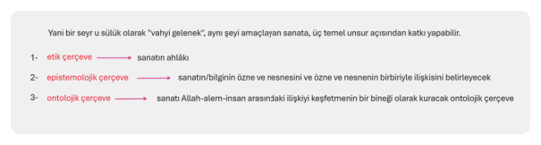
Bunlar, modern düşüncenin sözünü ettiğimiz türden sorularının tuzağına düşenler için, sanatı muhafazakar yapan "kötülüklerdir".
Zira bu tür insanlar için, ilke bağ demektir ve sanatçılığın ilk görünümü olabilecek tüm ilkeler den sıyrılıp bireysel fantezilerin ürettiği bir zombiye dönüşmektir.
Halbuki sözünü ettiğimiz üç temel kategorideki ilkeler, sanatın "bağları" olduğu kadar, onu diğer tüm "profan" bağlardan çözen kurtarıcılardır aynı zamanda.
Bağlarken çözerler...
Mesela kimi post-modern eğilimli "düşünürlerin" "ahläktan bağımsız" diyerek övdüğü sanatın, ahlakın ötesine taşan epistemolojik ve ontolojik boyutlara ulaşması mümkün değildir.
Mesela Trier'in Nymphomaniac ya da Antichrist filmlerinin "ahlâki" yaklaşımı ile Trier'in, yolculuk etmeye çalıştığı izlenimi vermeye çalıştığı (bu filmleri Tarkovsky'ye ithaf etmesi mesela) hakikat katmanlarına ulaşma imkânı sıfırdır.
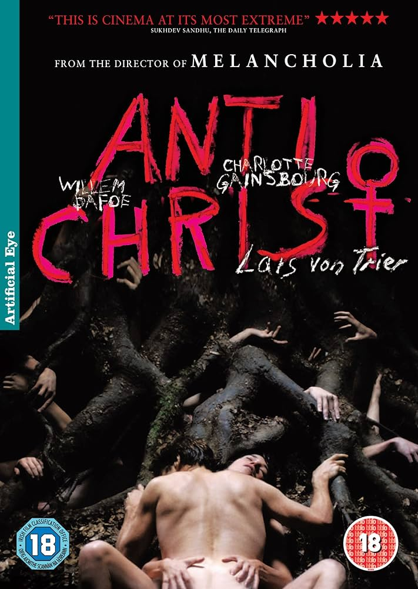
İlkeyi, yasayı, "şeriatı", ahlakı, bilgiyi, güzelliği, deneyimi, eylemi, marifeti, hakikati birbirinden ayırmaya çalışan modernitenin ve onun soysuz ve uçları keskinleştirilmiş nihilist/hedonist bir versiyonu olan post-modernitenin anladığı olmamalıdır sanattan anlamamız gereken.
İlkelerle hakikati; güzellikle bilgiyi, bilgi ile deneyimi; deneyimle ahlâkı, eylemi; şeriatla marifet ve hakikati birbirinden ayıran ve nihayetinde de sanatın, kendine ait, bilgi, ahlak, ilke ve vahiyden bağımsız bir alanı olduğu varsayımıyla hareket eden bu tutum tümüyle modern Batılı bir sanat anlayışını imler.
Bu sanat anlayışı, "yükselişi" değil, her çırpınışında biraz daha derine batmayı işaret eder.
Bugün dünya da sanat adına yapılanların çoğunun bu kategoriye girdiğini görmek, sorunun nerede aranması gerektiğini gözler önüne sermelidir.
Nefsin en alt kademelerinin bodrumlarında, cinselliğin, teşhirin, şiddettin, politikanın, propagandanın pornografisi böyle bir "ilkesizliğin" ilke yapılması sonucu ortaya çıkıyor.
"Sanat muhalif midir, yoksa muhafazakar mı?" sorusunun geleneksel bir sanat anlayışı içerisinde açıklayabileceği bir alan yoktur.
Soru, bizatihi örten, saklayan ve sanatın hakikati üzerine tefekkür ve tezekkür etmeyi yasaklayan mahiyet taşıyor.
Etik, epistemolojik ve ontolojik boyutların hep birlikte seferber edilerek oluşturacağı "form" veya estetikteki "devrimciliğin" (mesela tümüyle bir İslam sanatı olarak görülmesi gereken film sanatının İslam sanatlarının diğer formlarıyla kıyaslanınca devrimci sayılabileceği mefhumu) Batıcı bakışla inşa edilen bir form ya da içerik muhalifliği ile ortak hiçbir paydası yoktur.
Bunun tespiti pergelimizin muhkem ucunun kaydırılmaması için hayati önemdedir.
Eğer geleneksel bir sanat anlayışı kuracaksak, bu üç boyut üzerinde tefekkür ve tezekkür ile hareket etmeliyiz.
Epistemoloji ahlakı, ontoloji de epistemolojiyi özümseyip derinleştiğinde, Allah, âlem ve insan arasında modern çağlarda kopan bağları yeniden inşa edebilecek unsurları bünyesinde barındıran bir sanata kapı açabiliriz.
Sanatçının hayali ancak o zaman, dizginsiz kudurgan esfel-i såfilin'den, eşref-i mahlükat olarak yaratılan insanın, "Allah'ın yarattıklarını değil ama yaratış biçimini taklit eden" sanatına dönüşebilir.
Ancak o zaman, varolanlar Varlık ile bağları nispetinde değer kazanırlar. Ve ancak o zaman Allah'ın, yarattığı kâinat aynasının cilası olarak "iki eliyle yarattığı insanın asıl değeri anlaşılabilir.
5. Sanat ve zanaat ayrımı meselesi
Modern parçala(n)manın bağımsızlık verdiği sanatın, zanaattan ve diğer tüm "alanlardan" bağımsızlaşması sonucunu doğuran bir ayrım bu.
Bu da "bizim" düşünürlerimizi dahi "İslam'da zanaat vardır; halbuki sanat devrimci/muhalif olması gerektiği için, İslam'da sanat yoktur çıkarımına kadar götürür (mesela Süleyman Seyfi Öğün'ün birkaç yıl önce yazdığı bir yazısında çok yaklaştığı cinnet haliydi bu!)
Her şeyin bir tevhid anlayışıyla örüldüğü, kesretin Vahdet'le, Vahdet'in kesretle kurduğu ilişki biçimlerinin sanatın ve hayatın her alanına yansıdığı bir anlayışın, sanatın hakikati olduğunu ve o hakikatin, aynı zamanda zanaat denen şeyin marifetiyle de bağ(ım)lı olduğunu söylememiz gerekiyor.
Ancak geçmişte Öğün'ün yaptığı gibi, "verili" modern ayrımları bir "evrensel gerçeklik" olarak alıp, geçmişi o gerçeklik üzerinden belirlediğimizde, sanatın hakikati hakkında çok az şey söylemiş oluyoruz aslında.
Bach sanatçıydı da zanaatçı değil miydi aynı zamanda?
Ya da tersi... Ya Mimar Sinan? Itri? Sedefkår Mehmet Ağa? Ya Ayasofya mimarı İsidoros? Tarkovsky, Semih Kaplanoğlu, Levni?
Maalesef hemen hepimizin tuzağına düştüğü bu soru(n), aynı za manda, sanatı, bilgi ve hakikatten uzağa atan ve onu bir takım "güzellik tecrübelerine" indirgeyen (Kant bunu yapmasıyla modern baltayı sanata da vurmuştur!) modern düşüncenin süreği...
Eylemin, bilginin, hakikatin, marifetin, ahlakın, imanın aynı çekirdeğin farklı tezahürleri olduğunu ve sanat denen şeyin, tam da bu çekirdeği bir başka yaklaŞımla "yeniden inşa etmenin" adı olduğunu düşünürsek, marifet/hakikat ile güzelliği birbirinden asla ayıramayacağımız bir iklime kavuşuruz.
Ama tuzak sorular o iklimi bulmamızı engelleyen bir parçalanmış çölle karşı karşıya getiriyor bizi.
Çölün kuraklık ve susuzluğunda yolumuzu bulmayı asla beceremiyoruz.
Çorak ülkede kayboluyoruz...
Sanat üzerine birçok başka "yanlış soru" daha var aslında.
Ama aşağı yukarı tüm sorular, benzer bir yanlış zeminden ve o zeminin oluşturduğu bataklıktan sirayet ettiği için, yapmamız gereken temel iş hakkında aynı şeyi söyleyecekler bize.
Öncelikle sanatımızı belirleyen ilkelerin ne olduğu meselesinde ve o ilkelerle Batıda sanat eleştirileri ve eserlerinde gördüğümüz türden "yanlışların" neler olduğu meselesini ilişkilendirme biçimlerimizde "devrim" yapmamız gerekiyor hakikaten.
Evet, bizlerin, sanat ve hakikat ilişkisi üzerine düşüneceksek, öncelikle, bu yanlış sorularla örülü olan kafeslerde akıl felciyle yaşama mahkumiyetimizden kurtaracak bir devrime ihtiyacımız var.
Belki de yapmamız gereken tek devrim bu şimdilik!
imge ve Sinema: İmgeden Kaçış Olarak Sinema
Yukarıda kısaca ele aldığımız İslam sanatının temel dayanak, fikir, hikmet, ihsan ve kriterlerini, sinemanın nesiyle iliştirebiliriz peki?
Sinema, suret yasağının hikmet ve ihsanını kollayarak, rasyonalist, natüralist tutumlardan nasıl kaçabilir?
Ya da daha direk bir soruyla, sinema zaten suret yasağını alenen çiğniyor değił midir?
Yüzeysel bir bakışla evet, sinema tasvir, temsil veya suret yasağı olarak bilinen o ilkeleri çiğniyor görünebilir.
Ancak bu yorum, sadece "yasağın" hikmetinden pek fazla nasip almadıysak böyledir.
Önemli olan şey, neden kaçmaya çalıştığımız ve neyi ortaya koymak istediğimizdir aslında.
Sinema, iki boyuta indirgeme ve insanın hakikatini bir boyutta mühürleme olarak tanımladığımız o tutuma, Islam sanatının verdiği tüm cevapları bünyesinde en güçlü şekilde taşımasıyla zaten İslam sanatının içinde değerlendirilmesi gereken bir sanattır.
Hatta sadece içinde yer almakla kalmaz, sinema, İslam sanatının tüm ilkeleriyle, uzak durmaya çalıştığı çekincelerle ilgili çözümleri de "a priori" olarak bünyesinde barındırır.
Sinema, sanat tarihinde ilk defa, imge ile onun temsil ettiği (ya da ettiğinin iddia edildiği nesnesi) arasındaki "farkı" da, "bağlantıyı" da anlamsız hale getirir.
Levinas, içine zaman katılmış sinema imgesinin de, imgenin temsil krizinden kaçınamayacağını ve statik bir håle bürüneceğini ifade ederken haksızdır.
Zira sinema (ama fotoğraf değil) içinde büründürme kapasitesini haiz zaman sayesinde, imgenin temsil ettiği nesnesi ile bağıntısını ve ironik şekilde o bağdan kaynaklanan "nesnenin kaçışı" tehlikesini bertaraf eder.
Sinema "nesnenin kaçışı" tehlikesini bertaraf eder.
İzleyicinin sinema imgesi ile bağlantısı, artık tek bir boyuttan değildir.
İmge, her an ve her izlenme deneyiminde yeni bir håle bürünerek kendisini temsil ettiği nesneden uzaklaştırır.
Ancak bu uzaklaştırma, Levinas'ın ifade ettiği imge ile temsili arasındaki ayrışma türünden bir uzaklaşma değildir.
Levinas imge ile temsili arasındaki ayrışma
Sinema imgesinin temsilden uzaklaşması, onu hayatın ve sonsuzluğun temaşasının bir "simgesi" veya Tarkovsky'nin ifadesiyle bir hiyeroglifi hâline dönüştürür.
Sinema imgesinin temsilden uzaklaşması, onu hayatın ve sonsuzluğun temaşasının bir "simgesi" veya Tarkovsky'nin ifadesiyle bir hiyeroglifi hâline dönüştürür.
Farago'nun Tarkovsky sinemasını Malevitch'in resimleriyle ve onun ikonoklast tutumuyla karşılaştırması bu açıdan önemlidir."
Ancak Farago, "Varlık"la kurulan bağın umut ve kaostan başka bir şey olmayacağını; Tarkovsky sinemasının da, Malevitch'in resimde yaptığını, onun gibi simge ve imgeyi ortadan kaldırmadan başardığını söylerken kısmen haklıdır.
Tarkovsky sineması simge ve imgeyi ortadan kaldırmadan başardığı
Farago'ya göre Tarkovsky, "Tanrı'nın yokluğu"nun tinsel bir varoluş olarak sunulmasına imkan veren bir sinema yapıyordur.
Ruh, Mutlak Gerçeğin bir salınımı ve yansımasıdır artık.
Farago'nun bu noktada ifade ettiği şeyler, büyük oranda Deleuze'nin "tinselleşmeye" müsait zaman anlayışını bünyesinde barındıran sinemayı, yatay bir oluşun kucağına bıraktığı kavramsallaştırmalarıyla ilgilidir.
(İslam Sanatı ve Sinema Arasındaki İlişki
Suret yasağı ve sinema: Metin, sinema ile İslam sanatının suret yasağı arasındaki görünürdeki çelişkinin, yasanın hikmetini anlamamakla ilgili olduğunu vurguluyor.
Sinema, İslam sanatının bir devamı mı? Metin, sinemanın, İslam sanatının temel ilkelerini ve çözümlerini bünyesinde barındırdığını savunuyor.
Özellikle imge ve temsil arasındaki ilişkiyi yeniden tanımlayarak, İslam sanatının kaçınmak istediği tuzaklardan uzak durduğunu ifade ediyor.
Tarkovsky sineması ve İslam sanatı: Metin, Tarkovsky'nin sinemasını İslam sanatıyla ilişkilendiriyor ve özellikle imgeyi, hayatın ve sonsuzluğun bir simgesi olarak kullanışını vurguluyor.
İmge, Temsil ve Sinema
Sinema ve imgenin özgünlüğü: Sinema, imge ve temsil arasındaki geleneksel ilişkiyi yeniden tanımlar.
Sinema imgesi, statik bir temsil olmaktan çıkarak, zaman içinde değişen ve dönüşen dinamik bir yapıya sahip olur.
Levinas'ın eleştirisi ve Tarkovsky'nin çözümü: Metin, Levinas'ın imgenin temsil krizine dair eleştirisini ele alırken, Tarkovsky'nin sinemasının bu krizi aşarak imgeyi daha derin bir anlam katmanına taşıdığını savunur.
İmge ve varlık: Metin, Tarkovsky sinemasında imgenin "varlık"la kurduğu ilişkiyi inceler. Farago'ya göre Tarkovsky, "Tanrı'nın yokluğu"nun tinsel bir varoluş olarak sunulmasına imkan veren bir sinema yapmaktadır.)
Ancak Farago'nun görüşleri en azından Tarkovsky'nin sanatını anlamak açısından eksiktir.
Zira Malevitch ile Tarkovsky arasındaki en derin fark, Tarkovsky'nin Malevitch gibi mutlak tenzihe (ve giderek vahiysiz bir mistisizme) gömülmemesi ve aynı zamanda, teşbihin "yatay sembollerine" de prim vermemesidir.
Onun sineması, her iki düzeyin de önemli bir birlikteliğini bünyesinde barındırır.
Sinemanın düzeyi büyük oranda oluşun yatay (hatta dikey) ekseninde başıboş olarak sürüklenmez.
Zira oluş ırmağında ıslandıktan sonra kurumayı düşünmeyen bir sanat eseri, kaybolmaya ve dağılmaya mahkumdur.
Oluş, şahådet âleminin "mahiyetine" yolculuktur, ama Hakikatin kendisi ile oluşun yer değiştirilmesi, bizi ve sanatımızı nihilizme götürme tehlikesini bünyesinde barındırır.
Bu yüzden Deleuze'nin belki de Tarkovsky'nin sinema ve zaman anlayışından mülhem zaman-imge teorilendirmesi eksiktir.
Sinema imgesi, hareket ve zaman imgeleri dışında, iki "imkâna" daha sahiptir:
Bunlar, bu kitapta diğer bölümlerde yeri geldiğinde kısaca, ama sonraki kitaplarda ayrıntısıyla anlamaya çalışacağımız, İbn Arabi den mülhem "rüya-imge" ve "berzah-imge" olarak tanımladığımız imge modelleridir.
Sinema imgesi, hareket ve zaman imgeleri dışında, iki "imkâna" daha sahiptir:
1-rüya-imge
2-berzah-imge
Her iki imge, sinemayı, oluşun devamlı akan ırmağından alarak, Varoluşun ve sonra da Varlık'ın yücelerine taşıma kapasiteleriyle önemlidirler.
Bu bakımdan, sinemanın diğer sanatlarda olduğu türden bir temsil, tasvir ve imge şekliyle bağını koparma kapasitesi önemliyken, sinemayı, oluşun ve son tahlilde çapraşık bir nihilizmin kucağına bırakmadığımızdan emin olmalıyız.
Tenzih ile teşbihin ortaklaştığı bakış, önünde sonunda "sinemanın tevhidi "ni kurabilmelidir.
Zira sinemayı, diğer tüm sanatlardan yukarı çıkaran, ondaki bu özelliğidir.
Sinema ile imge ilişkisine tekrar dönersek, diğer sanatların izleyicileri ile sinema izleyicisinin "ontolojik" ve "epistemolojik" konumları arasında bariz farklar görürüz.
Sinema izleyicisi, diğer sanatları "görmeye çalışan izleyici gibi değildir.
Zira sinema, ama özellikle zamanın içinde yüzmeye bırakılan bir sinema, izleyicinin sübjektif bakışına bağımlı olmadan, onun sübjektifliğine açılır.
Bu şu demektir: Sinema izleyicisi, her izleyişinde, daha önceki izleyişinde temsil edildiğini düşündüğü nesne ve onun imgesinden farklı şeylere tanık olur.
Gördüğünü, ne kendi öznelliğinde bir imge modeli olarak modelleyebilir, ne de kendi öznelliğinden kaçarak bir deneyime tanık olabilir.
Sinema, tasavvufun "hem, hem de" tutumunun adeta sanata vurulmuş hali gibidir. ?????
"Evet" ve "hayır"ı sarmal şekilde birbirinin içine geçirir.
Hem sübjektiftir, hem de sübjektiflikten kaçan bir evrenselliğe yürür.
Hem evrenseldir, hem de izleyicinin "görüsü olmadan evrenselliği anlamsızdır.
Ne izleyicisinin, bütünüyle öznel ve bireysel bir sanatın sanatçısının temsil-imge tutsaklığındaki türden kapılmalarına, ne de zaman-dışı algılarıyla yakalayıp heykelleştirebileceği bir zamansız-anlama müsaade eder.
Bu sebeple bireyselin penceresinde açılmış bir evrenseldir sinema.
bireyselin penceresinde açılmış bir evrenseldir sinema.
O pencere olmadan evrensel kendini açmaz; ama evrensel olmadan da bireyin bakışı hiçbir şey değildir.
İslam sanatının imgeye ve surete yönelik tutumu ile sinemanın imkân ve tutumu arasındaki asıl bağlantı buradadır.
Sinema, imgenin, temsil ve tasvir edici kısıtlayıcılığına direnerek, adeta imgeden kaçar.
Sinema imgeden kaçar.
Sinemanın ortaya koyduğu imgeler, en azından belirli düzeyin üstünde, artık klasik sanatın, ya da "sinema öncesi sanatın" imgeleri gibi değildir.
Ancak özellikle ifade etmek gerekiyor ki; Benjamin'in fotoğraf imgesi gibi de değildir sinema.
Sinemayı, diğer sanatlardan ayıran onun "fotoğrafsallığı" değil, zamansallığıdır.
Temsilin "direk olduğu" ve artık nesnesi ile ayrımın kalmadığı düşünülen fotoğraf, aslında nesnesini kendinden kaçıran bir işlev görmesi itibariyle, temsili bir sanat olarak kalmaya mahkumdur.
Temsilin "direk olduğu" ve artık nesnesi ile ayrımın kalmadığı düşünülen fotoğraf, aslında nesnesini kendinden kaçıran bir işlev görmesi itibariyle, temsili bir sanat olarak kalmaya mahkumdur.
Sinemanın temâşa ile ilişkisi, onun boşluk, zaman ve ritm ile ilişkisinden bağımsız değildir.
Sinema, zaman içine gömülmüş, zamanla birlikte bir ritm eşliğinde akan ve oradan ebediyete doğru yükselen bir temâşă alanı yaratır.
Sinema, zaman içine gömülmüş, zamanla birlikte bir ritm eşliğinde akan ve oradan ebediyete doğru yükselen bir temâşă alanı yaratır.
"Yakalanan bir imge" yoktur orada artık.
Her an yeniden dönüşen, değişen ve oluş ırmağı içinde ıslanan bir imgedir sinemanınki.
Ancak daha önce belirttiğimiz ve daha sonra "sinemanın katları" meselesinde açıklamaya çalışacağımız gibi, oluş ırmağında yıkanmak, o ırmakta ebediyen kalmak anlamına gelmez sinemada.
Sinemanın fena'sı ile sinemanın beka'sı tam burada gözümüzün önüne gelmelidir.
Boşluk, sessizlik ve ritm, sinemanın özünde diğer sanatlarda hiç olmadığı kadar "a priori" halde mevcuttur.
Boşluk
Sessizlik
Ritm
Figüratif sanatların tümünün iki boyuta kıstırılmışlığına inat, sinema kadraj içindeki alandan çok daha kuvvetli bir şekilde kadraj dışında var olur.
Figüratif sanatlar iki boyuta kıstırılmışlık
Zaman, kadraj dışına taşmanın bir yolu ve an ile ebediyet arasında kurulan dinamik bağın taşıyıcısıdır.
Zaman, artık hareketlerin ardıllığının bir ifadesi değil, maneviyatın direk bir taşıyıcısıdır sinemada.
Levinas'ın statik imgeye yönelik eleştirilerinin hiçbirisi, sinemanın dinamizmi içinde geçerli değildir.
Sinema zaman içinde "varolarak" oluşturduğu "hayatı", temsilin tüm ikili gösterge ilişkilerinden kaçırma kapasitesine sahiptir.
"Boşluk", tümüyle metafizik açılımları ve tasavvuftaki "hiçliğe" (Batılı düşüncenin nihili ile karıştırmayalım bu hiçliği) doğru sonu gelmeyen açılımlarıyla sinemada en kuvvetli unsurlardan birisidir.
Seyyid Hüseyin Nasr'ın belirttiği soyutlama düzeyi ve aslında "gerçekçilik" denen şeyin hakikati, sinemada, her an'da ebediyeti yansıtma potansiyeliyle mevcuttur.
Sinema, bu yönüyle tümüyle manevi bir sanat ve gerçekçiliğin dolayımsızlığına açılmak için, natüralizmin kıskacına ihtiyacı olmayan bir sanat olarak, İslam sanatının bağrında doğmuş gibidir.
Sinema, İslam sanatının bir hikmet ve fikir olarak inşa ettiği sanat-hakikat ilişkisinin, tüm boyutlarıyla üzerine inşa edebileceği tek sanattır.
Boşluk denen şeyin, "hiçliğin", ritmile tümüyle manevi alana ait olan gönül çırpıntılarımızın ilişkilerini, üzerinden kurabileceğimiz devasa bir imkân alanı...
Rasyonel ve "bireysel (ci)" perspektifin karşısına çıkarabileceği "tanrı bakışı" ile neredeyse tümüyle manevi bir ortamdır sinemanın ortamı.
"Tanrı bakışının" ikamesi, sinémanın, diğer sanatların hepsinden kaçışını mümkün kılan bir imkâna da sahiptir.
Zira bakıştaki rasyonellik yerine çoklu ve çok boyutlu bir bakma ve görmeye; ve statik imge yerine dinamik ve sabitleştirilmekten kaçan bir imgeye imkan verir "Tanrı bakışı".
--------------
Bu kitabın temel amaçlarından birisi diğer sanatlarla film sanatı arasındaki ilişkileri anlamak olduğu ve bu ilişkiler, kitap boyunca olabildiğinde geniş kapsamlı ele alındığı hâlde, imge meselesi bağlamında diğer sanatlarla film ilişkisine bu bölümde bir giriş yapmakta fayda var.
Sanat eseri, hakikatin çeşitli unsurlarının değişik nispetlerdeki titreşimlerini o eseri tecrübe eden insana geçirir.
Sanat eseri, hakikatin çeşitli unsurlarının değişik nispetlerdeki titreşimlerini o eseri tecrübe eden insana geçirir.
İnsan, ruhu, akleden kalbi, mantığı, duygu ve duyumları ile sanat eserini bir bütün olarak kavrar.
Ancak, her sanat biçimi, bu unsurların hepsine eşit düzeylerde hitap etmez.
Her sanat biçiminin kullandığı "dil araçları" insanın onu kavrayacak çeşitli melekelerini harekete geçirir.
Edebiyat kelimelerin oluşturduğu bir dünyada yaşar.
Müzik, sesin ve duymanın eşiklerinden kalbe doğru akar.
Resim, renkler ve fırça darbeleriyle görmenin derinliklerinden zihnin ve kalbin duvarlarını aşar.
Tiyatro, konuşma, jest, mimik ve dekorun araçlarıyla zihne ulaşmaya çalışır.
Sinema, edebiyatın kelimelerini ve onlarla imal edilen simgesel dilinden kaçış imkânı sağlar.
Sinema, edebiyatın kelimelerini ve onlarla imal edilen simgesel dilinden kaçış imkânı sağlar.
Edebiyat, imge ve simgesel değiş-tokuş ile çok anlamlılığı ancak psikolojik olarak ikame etme şansına sahiptir.
Edebiyat psikolojik -ruhî tesir
Özünde simgesel olan edebiyatın dili, sinema içinde kullanıldığın da, simgeselleştiren ve bütünüyle despotik bir görünüm alır sinema.
Özünde (normalde) |
edebiyatın dili |
simgesel |
bir görünüm |
sinema içinde |
simgeselleştiren ve bütünüyle despotik |
Simgesel = remzî , timsalî
Edebiyatın kelime ve konuşma bağımlılığından, håle kaçıştır sinemanın imkânı.
Edebiyat bağımlılığı |
|
kelime ve konuşma |
sinemanın imkanı |
|
hål |
Edebiyat, hål dilini ancak kelimeleri şiirleştirerek ve simgelediğinin dışına taşırarak becerebilirken, sinema içinde "hål dili" bir imkân olarak içkindir.
Tiyatronun oyunculuk, dekor ve mizanseni ile gerçek olmayan zaman anlayışı, sinemanın kaçması gereken en önemli unsurlarındandır.
Sinema, oyuncu değil yönetmen sanatıdır.
Oyuncunun, sadece yönetmenin istediği, kurmak veya açmak istediği dünyaya katılımı oranında, yani "oyunculuğu silindiğinde" iyi bir sinema oyuncusu olarak tanımlanabileceği bir dünyadır bu.
Tiyatro, Bazin'in söylediği gibi merkezcildir.
Sahne dışında bir hayat taşımaz.
O yüzden hayat orada canlı değil plastiktir; aynen diğer plastik sanatlar gibi.
Ancak sinema, kadraj dışı sanatıdır büyük oranda.
Sahnede olandan çok "sahne dışındaki sinemanın evrenini belirler.
Bu yüzden sinema, tiyatronun merkezcil sahne ve hakikat anlayışı yerine, kendine ve imkânlarına has merkez kaç bir kadraj, kadraj-dışı ilişkisi ile kurulmalıdır.
Sinema tüm sanatlar içinde en çok müziğe benzer aslında.
Ancak müziğin harekete dayanan ritm ve soyut zaman anlayışının yerine, hakikî bir zaman ve o zamanla bağlı ontolojik olarak manevi bir ritm anlayışı kurar sinema.
Müzik |
ritm ve soyut zaman anlayışı |
harekete dayanır |
sinema |
hakikî bir zaman |
kurar |
ve o zamanla bağlı ontolojik olarak manevi bir ritm anlayışı |
Ancak simgesellikten kaçışı ve statik olmayan imgesiyle sinemayla müzik büyük oranda örtüşürler.
Bu yüzden, sinemada müzik üzerine düşünürken, "filmde müzik"ten çok, filmin kâinat ve insanın müziği olarak düşünülmesi daha değerli bir çıkış noktası olabilir.
Resmin çerçeve içi dünyası ile tiyatronun çerçeve içi dünyası büyük oranda özdeş sayılabilir.
Ancak resimde çerçeveden kaçarak dünyaya ve hayata sığınmak her zaman mümkündür.
Resmin, eğer sinema ve sinema imgesi ile ilişkisi kurulacaksa, bu yönüyle ilişki kurulmalıdır.
Sinema, fotoğrafın zaman-dışılığını ve imge nesne ilişkisindeki yer değiştirme anlayışını da parantez içine alır.
fotoğraf |
|
zaman-dışılık |
Fotoğrafsallık değil zamansallıktır sinemayı sinema yapan.
Ölü ve ölmeye devam edecek; ancak psikolojik olarak zaman ilişkisi kurulabilecek fotoğraf, sinema sanatının sadece teknik altyapısını oluşturur.
Yoksa ontolojik olarak tümüyle farklı iki sanattır fotoğraf ile sinema.
Sinema, sanat dallarının tümünün anlayış ve araçlarını kullanabilme imkânını haizdir.
Ancak sinemayı asıl güçlü yapan, tüm sanat dallarını bünyesinde taşıma imkânı değil, bütün bu sanat dallarının imge ve anlayışlarının paranteze alınabilme imkânıdır.
Sinema, parantez içinde kalan o alanın dışına bir sanat kâinatı kurar.
Kurulan kâinat, parantez içindeki alanı da kapsar; ancak onunla yetinmez, parantez İçindeki "dil araçlarını" ve imgeyi hiçbir zaman birincil aracı olarak anlamaz ve kullanmaz.
Bazin'in tiyatro ve sinema için yaptığı ayrım, aslında tüm sanat dallarıyla sinema arasındaki ayrımı belirler.
Bu yüzden diğer bütün sanat dalları merkezcildir; sinema ise merkezkaç...
Ancak film sanatının görece yeni bir sanat olması, bu sanatın mevcut ve mümkünleri arasındaki uzaklığın hâlâ yeterince aşılamaması sonucunu doğuruyor.
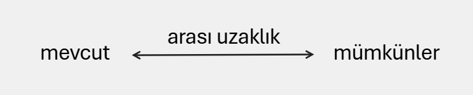
Bugün dünya sinemasının kahir ekseriyetine baktığımızda, "sinemanın mümkünü" olan o parantez-dışı alandan ziyade parantez içine yönelik bir çaba içinde olduğu yadsınamaz bir gerçektir.
Sinema eleştirileri de bu mümkün-mevcut ayrımı üzerine çok fazla düşünce üretiyor görünmüyor.
Genellikle filmin "ne anlattığı" meselesi incelemesi yapılan filmin temel düzlemini oluşturuyor.
Ya da materyalizmin cilalı bir reenkarnasyonu olan göstergebilimin yaptığı gibi, tümüyle mekanik bir süreçle, filmlerin "malzemesi", ruhu çıkarılıp, filmler kasap dükkânındaki etlerin ruhsuzluğuna indirgeniyor...
Böyle olunca ideolojik bakış ve dünya görüşlerimiz bir filmin "iyi" ya da "kötü" olarak değerlendirilmesinde başat kriterimiz oluveriyor.
"Dindar" eleştirmenler, bir filmde gördükleri iki ayet, birkaç dini mesajla, o filmi neredeyse başyapıt düzeyine çıkarabiliyorlar.
Solcu eleştirmenler, sınıf çatışmasına ya da bugünün sıcak konusu Kürt meselesine gördükleri bir-kaç imayla dahi, bir filmi oldukça yüksek düzeylere çıkarabiliyorlar.
Aynen bir makalede veya edebiyat eserinde olduğu gibi, anlatımın kelimelerin, konuşmaların düzleminde kurulması, bu tür eleştirmenlerin işini oldukça da kolaylaştırıyor.
Halbuki sinema, parantez içindeki "dilin" ötesine taşabilen bir özelliği olduğu için önemlidir.
Sanatın sinema dışındaki tüm dallarının bağ(ım)lı olduğu "dil" den firar etme kapasitesidir sinemayı değerli kılan.
Imgeden firar etme kapasitesi...
Sinema imgesi olarak kurulan ve sinemanın imkânını taşıyabilmek için onun felsefesinin ürettiği zorunlu görünümler, sanatın diğer dallarının imge ve görünümlerinden uzak olduğu müddetçe sinemanın imkânlarına yaklaşabilir.
Kelimenin, logosun, konuşmanın, jest ve mimiklerin, dekorun, resmin ve ya da fotoğraf imgesinin ötesine geçebilen, "hayatın bizatihi kendisini" taşıyan bir akıma sahiptir sinema.
Ve bunu, hayatın "parçalarını" simgeselleştirmeden yapar.
"Nasıl durmaksızın akan ve değişen hayat her insana, her bir anı kendince hissetme ve kendince anlamlı kılma olanağı tanıyorsa, bir film şeridinde kusursuz bir şekilde sabitleştirilmiş, ama çekimin sınırlarından taşan bir zaman içeren hakiki bir film de, ancak zaman onun içinde yaşayabiliyorsa zaman içinde yaşayabilir. ‘’
Sinemanın özgüntüğü işte bu karşılıklı etkileşimde yatar, "AS Andrei Tarkovsky'nin bu tespitleri, sinemanın aslında ne olduğuna yönelik çıkış noktamız olmalıdır.
Sinema, oyuncuları, dekoru, mizanseni, senaryosunun dışında ve her şeyden önce zamandır.
Zaman, íçinde bulundurduğu ebediyet kapısıyla, sinemayı diğer tüm sanatların kapalı olduğu dil parantezinin dışına taşır.
Zaman dil parantezinin dışına taşır.
Sinema üzerine düşünen, üreten insanların anlaması gereken birinci şey, insanın "konuştuğu zamanların dışında var olduğu" hakikatidir.
Konuşma ve sözler, insanın varoluşunu belirli bir düzeye "indirger" ve insanı, yatay bir düzlem üzerine hapseder.
Mesela bir aşığın durumunu düşünelim.
Aşık, sevgilisine söylediklerinde aşkının ancak çok azını tarif edebilir.
Ama tasavvufta "hål dili" olarak tanımlanan dil, o çok azın dışındaki ebediyete gözünü diker.
O hål ile âşık, aşkının, mâşukunun kalbine geçmesini sağlar.
İşte sinemanın gözünü dikmesi gereken ufuk da bu hål dilidir.
Ne sözünü ettiğimiz hål dili, ne de zaman, konuşmanın ve sözlerin birincil ağırlıkta olduğu hiçbir sinema yönteminde, ebediyete akışını tamamlayabilir.
Abartılı olması pahasına söylersek; bir film, sözlerinin anlamı bilinmediğinde de aşağı yukarı aynı ruhsal etkiyi verebilecek olan filmdir.
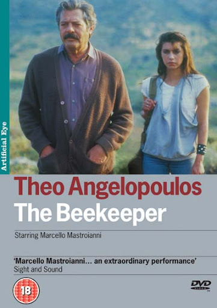
Örnek vermek gerekirse; Angelopoulos'un birçok filminde olduğu gibi, Arıcı Melissokomos filminde de, zamanın, insanın deneyim boyutlarını nasıl katman katman açtığına delil olabilecek sahneler vardır.
Filmin girişindeki düğün sahnesinde, gelinin bir "kuşun" peşinden gitmesiyle gelinin peşine takılan davetlileri takip etmeyi bırakan, ama onlarla aynı zaman akışı içinde bağlıkalan kamera, kızını kaybetmekte olan babanın hüzünlü yürüyüşüne odaklanır.
Aynı plan-sekans içinde, yine bir kadın elindeki çay tepsisini düşürür. O sırada kadrajda görülen sadece baba kadın ve kırılan çay bardaklarıdır.
Ancak, hayat, az önce kameranın bıraktığı yerin dışında; yani çerçeve dışında zamanla kurulan bağla devam etmektedir.
Bir Film katmanı babanın düşünce düzeyindeyken, diğeri, öteki yerde ama aynı zaman içinde başka boyutlarıyla akmaktadır.
Zaman, sinemayı diğer sanatların tümünün parantez dışına taşıyarak, statikleşen ve "gösterdiği" nesnesiyle ilişkinin de kopmasının ana vesilesi olan imgeyi, kendinden kaçırır ve zamansallaştırarak dinamikleştirir.
Bu, imgeden kaçış olduğu kadar, nesnenin hayatına katılmak bağlamında, imgenin ebediyeti anlamına da gelir.
Sinemanın Katlarına Bir İmkân Olarak Bakmak ve İki "Yeni" İmge: 'Rüya-imge', 'Berzah-imge'
Daha önce belirttiğimiz gibi, sinemanın asıl değeri, diğer tüm sanat dallarının imkânlarına sahip olması, ama onların hiçbirinin sahip olmadığı imkânları da, asıl özelliği olarak bünyesinde barındırmasıdır.
Sinema, bu bakımdan, geleneğimizde "hål dili" olarak tanımladığımız şeyi aktarabilmek açısından çok değerlidir.
Bu "hål dili" ne demektir diye düşünürsek, sinemanın ne yapabileceği üzerine de yeterli bir fikre sahip oluruz.
"Hål dili" ister insan, ister diğer canlı varlıklar, hatta cansız varlıklarda olsun, bir "dua hali" olarak düşünülebilir.
Hal dili dua hali
Her varlığın, Allah'ı kendi dilinde tesbih ettiği hakikatini, sanatlar içinde sinemadan daha derin algılayıp aktarabilecek hiçbir sanat dalı yoktur.
Sinema, sanatın duaya bürünmüş hali olma kapasitesine sahiptir.
Nasıl ki insan, duaya bürününce ve o duanın en derin anı olan secde anında egosunu yerle bir edip ruhunu yüceltiyor ve nefsinin tüm zincirlerinden kurtulup hakikat yolunda yürümeye başlıyorsa, tüm varlığın dua häline açılabilen ve bir temăşă haline dönüşebilen sanat da, " varlığın duasına tercüman olabilir.
Yukarıda açıklamaya çalıştığımız "hal dilinin" bir temăşă olarak ve zaman içinde ån üzerinden ebediyetle bağ kurabilmesi sinema sanatını asıl değerli yapan şey.
Sinemanın diğer her türlü "yatay boyutunun" dışında asıl düşünülmesi gereken özelliği budur.
Sinema, diğer sanat dallarındaki katmanlı yapılar gibi birkaç ana katmanda değerlendirilebilir.
Ancak o katmanları kısaca ele almadan önce , büyük mutasavvıf Attar'ın Mantıku't Tayr'da bahsettiği yedi va diden biraz söz etmek gerekiyor.
Zira bu vadiler, insanın "yükselebileceği" kademelerin de bir remzi olarak sinemanın "yüksekliklerini" belirleyebilir.
Mantıku't Tayr'da Attar "İstek Vadisi", "Aşk Vadisi", "Marifet Vadisi", "İstiğna Vadisi", "Tevhid Vadisi", "Hayret Vadisi" ve "Yokluk Vadisi"nden bahseder.
Bu vadilerin mânâsını anlamak, sadece insanın yolculuğunda değil, onun bir zihinsel/kalbi üretimi olan sinema için de değerli çıkış noktaları olacaktır bizim için.
İstek Vadisi'ni geçmek, sinemanın estetik olarak "ahlâkını" belirlemektir.
Kameranın bir edebi, bir ahlâkı olmalıdır.
İstek Vadisi, sıyrılmamız gereken nefsi istek ve arzuları ve sinemanın sonrasında geleceği bir üst basamağı imler.
İstek Vadisi'nden geçme isteği, kamerayı, nesnenin mahremiyetine tecavüz edebilecek bir durumun değil, nesneyi, kendi oluşunda müdahalesiz temâşa etmenin bir aracı haline dönüştürür.
Pornografinin her türlüsünden tutun da, propagandanın çeşitli versiyonları "parantez içine alınır" ve sinemada kullanılmayacak öğeler olarak "dışlanır".
"Azalarak çoğalmanın" ön bilgileri İstek Vadisi'ni geçerken tefekkür edilir.
Aşk Vadisi'ni aşmak demek, sinema için, kameranın "gözünü" bir dervişin tefekkür ve aşk gözü haline getirmek demektir.
Marifet Vadisi, her kişi ve yeteneğin kendi "maşrapası" nispetinde okyanustan alabildiği bir sinema tefekkürü ortamı kurulmasını gerektirir.
Can yolcusuna da, ten yolcusuna da söyleyecek sözü olacaktır yönetmenin.
Ve herkes kendi kıymeti nispetinde kendi önüne açılan pencereden käinatı "seyre dalacaktır" sinemanın marifet vadisinde.
İstiğna Vadisi, zaman ve mekânın kendi içine dürüldüğü sonsuz durgunluk, boşluk ve çöl demektir.
Marifetin sonsuz görünüm ve perspektiflerinden sonra gelen durgunluk ve oluş ırmağından çıkarak sonsuz çölde kurulanmak demektir bu.
Film sanatını, özellikle "sonsuz ve amaçsız bir oluşun" aracı olarak gören ve gösteren modern sinemanın "zaman-imge"sinin ötesine geçiş gerekliliği olarak yansır burada sanat.
Ve sonraki adım Tevhid Vadisi'dir.
Sinema açısından bakarsak, sinemanın fena hålidir burası.
Marifetin sonsuz görünümlerinin birer yanılgı olduğu ve dairenin etrafındaki her noktanın merkeze uzaklıklarının aynı olduğunun tefekkür edildiği yer...
Ve sonrasında Hayret Vadisi'nde, istek Vadisi'nden önceki duruma bir dönüş vardır ama artık İstek Vadisi'nin öncesindeki değildir sinema.
Sinema burada beka olarak yansır.
Oluş ırmağında çıkarak kurulanan ve Vahdet'in kucağında şefkat bularak, öğrendiklerini yine varoluşa dağıtan...
Ama ne oluş aynı oluş, ne de istek aynı istektir artık.
Mantıku't Tayr'dan hareketle bir çıkışını oluşturmaya çalıştığımız sinemanın ilke ve katları meselesini biraz daha derinleştirebiliriz.
Ortaçağ Hıristiyan düşüncesinde, İslam geleneğinde, Uzakdoğu hikmet geleneklerinde ve hatta modern çağdan geleneğe bakmaya çalışan düşünürlerde, genellikle sanatın birkaç ana katman içinde değerlendirildiği görünür.
"Yüzeysel gerçeklik" diyebileceğimiz birinci katman, alegorilerle kurulan ikinci katman ve Farago'nun Dante ve Origen'den ilhamla "tinsel katman" olarak tanımladığı üçüncü katman...
Ancak sinemayı sanatların en büyüğü ve maneviyata ulaşmak açısından kapasitesi en yüksek olanı olarak değerlendiriyorsak şayet, bu üç katman sinemayı anlamaya yetmez.
Sinemanın kat(man)larının belirlenmesi için, İslam geleneği ve tasavvufun da öncüllüğünde biraz daha derin bir düzenleme yapılabilir.
Fusûsu'l-Hikem'de İbn Arabi insanı "berzah" olarak tanımlar.
Adem (a.s.) bazı hadislerde dile getirildiği gibi Rahman'ın suretine göre yaratılmıştır.
Allah'ın, "iki eliyle" yarattığı Adem'e meleklerin secde etmesini istemesi bununla ilgilidir.
Bu hikmeti İbn Arabi, insanın Allah'ın isimlerinin tüm tecellilerini üzerinde barındırma kapasitesiyle, yani İnsan-ı Kâmil olma kapasitesiyle açıklar, "Allah, Adem'in yaratılışında iki elini yalnızca Adem'i şereflendirmek için birleştirdi.
Bu nedenle İblis'e şöyle dedi: İki elimle yarattığıma secde etmekten seni alıkoyan nedir?[38:75]
İki el ile yaratılmış olmak, Adem'in iki sureti-âlemin suretini ve Hakk'ın suretini-kendinde toplamasının ta kendisidir.
İki el ile yaratılmış olmak |
|||
Adem'in |
|
âlemin sureti |
kendinde toplama |
|
Hakk'ın sureti |
||
Bu iki el Hakk'ın elidir.
Iblis älemin bir parçasıdır ve bu toplayıcılık özelliği onun için gerçekleşmemiştir.
Bu nedenle [İblis veya bir başkası değil, bu toplayıcılığa sahip olan) Adem halife oldu.
Bu yönüyle insan, iki özelliklidir.
Birincisi insanı halife yapan özellik; diğeriyse üzerine halife olduğu varlıkların özelliğidir.
İbn Arabi bu yönüyle insanı "berzah varlik" olarak niteler ve berzah varlık, âlemin Hak ile irtibatını temin eder.47
İnsan, iki özelliklidir |
|
1- |
insanı halife yapan özellik |
2- |
üzerine halife olduğu varlıkların özelliği |
İbn Arabi'nin insanı berzah varlık olarak tanımlaması bizim sinema ve sanat anlayışımız açısından birkaç açıdan önemlidir.
Birincisi, insanın mahiyetinin ve hem Hakk, hem de älemle ilişkisinin, sinemanın ana ortamını oluşturması gerekliliğine desteğidir.
Öncelikle imge meselesinde ele aldığımız gibi, sinema imgesi âlemin "temsili olmaya" yaklaşırken Hakk'a, Hakk ile bir ve aynı şey "sayılma" tehlikesini barındıran oluş nehrinde yıkanırken de âlem'e "kaçmak" zorundadır.
Teşbih ile tenzihin birlikteliği burada yatar.
Berzahlığın farkına varmak, sinema imgesini de bu berzaha oturtmak anlamına gelir.
Yaklaşırken uzaklaşan, uzaklaşırken yaklaşan iki yüzlü bir ayna gibi...
Ama o ayna, ne bir yüzüyle ne öteki yüzüyle gösterdiğinin temsil ve tasviri olmadığının "kendilik bilincinde" olan bir aynadır.
Bir ufuk, bir sonsuzluk ve bir temâşă aynasıdır bu.
Bir kudsî hadiste "Ben gizli bir hazineydim, bilinmeyi sevdim ve mahlükatı yarattım" buyuran Hakk'ın, isimlerinin tecellisi olarak yarattığı âleme üflediği ruh ve âlem aynasının cilası olan insan, 4 âlemle temas ederken vazife ve değerini bilmek zorundadır.
Alem aynasını sinema perdesinde gösterirken, o ålemin, tecellisi olduğu Rahman'ın nefesini ve halifelik bilincini asla unutmamalıdır yönetmen.
İbn Arabi'nin insan, âlem ve Allah üçgeni içinde tanımladığı ontolojiyi de dikkate alarak sinemanın özellikle beş ana katmanla tanımlanabileceğini söyleyebiliriz.
Bu katmanların her birisi, ara katmanlar içerdiği gibi, her yönetmenin/filmin aynı zamanda bulunduğu birkaç katman da olabilir.
Ayrıca her üst katman, alttakileri en kämil şekilde kapsar ve dönüştürür.
Dünya sinemasının kahir ekseriyetinin ilk iki katman üzerinde inşa edildiğini söylersek, sinemanın "mevcut" ile "mümkünü arasında, henüz aşılması gereken epey yolların olduğunu daha net anlayabiliriz.
Katlarda "yukarı" çıkıldıkça, rasyonel aklın neden-sonuç bağları ile belirlenen sınırlarından, gelenekselcilerin "entelektüel sezgi" dedikleri ve geleneğimizde "akleden kalp" olarak tanımlanan algı düzeylerine doğru hareket edilir.
İşte bizi, sinemanın imkânları konusunda asıl ilgilendiren taraf da budur.
Sinema, insanın berzahlığını ifşa ve tefekkür etmeye yaklaştıkça büyür ve hem âlem hakkında, hem de Hakk hakkında bir marifete sahip olmaya başlar.
Sözünü ettiğimiz katlardan birincisi "hareket yüzeyinde" kalan ve "kasap dükkânı gerçekçiliği" olarak tanımlanabilecek olan düzeydir.
Burada, sinemaya has bir özellik yoktur aslında.
Edebiyatın, tiyatronun ya da diğer sanat dallarının çoğunun yuvalandığı bu düzeyde, film, konuşma ve hareketlere dayanır çoğunlukla,
Hollywood'un veya dünya sinemasında ana akım içinde değerlendirilebilecek olan sinema tür ve biçimlerinin kahir ekseriyeti bu katta var olurlar.
Bu kat, Deleuze'nin sinema üzerine yazdığı iki ciltlik kitabında tanımlamaya çalıştığı imge biçimlerinden hareket-imge'ye dayanır çoğunlukla.
Hareket-imge, sinemanın diğer sanatlarla arabirimini oluşturur büyük oranda.
Imgenin henüz ikili gösteren-gösterilen statik ilişkisinden sıyrılmaya başladığı bir düzeydir bu.
Hem sinema, hem de diğer sanatların gölgesi vurur bu düzeye.
Kimi zaman diğer sanatların imge biçimleri, bu düzeyde kalan filmlerin bire bir tanımlanması için yeterli olurken, hareket-imge içinde tanımlanan bir imgeler antolojisiyle, anlamlandırma statik bir şekilde yapılır.
İkinci kat, diğer sanatların çoğunun "simgesel" yapıtaşını oluşturan alegorilere yaslanan bir sinema dilinin inşa edildiği kattır.
Burada "ters" ve "yatay" bir sembolizmle siyasi, dini, toplumsal alegoriler kurulur.
Bu dil, rasyonel aklın sınırları içinde bir tür bilmececiliğe dönüşür.
Yönetmen "mesajını" alegorilerin ardına gizlemiş ve izleyiciden istenen, yönetmenin "sorduğu" ve "cevapladığı" bilmecenin cevabını bulmasıdır.
Dünya sinemasında, çoğu eleştirmen ve kuramcının "başyapıt" damgası vurduğu epey bir film ve onların yönetmeni aslında bu düzeyde kalan ve yukarı tırmanmakta başarılı olamayan film ve yönetmenlerdir.
Bu kat, Deleuze'nin tanımladığı şekliyle modern öncesi klasik sinema ile birlikte büyük oranda modern sinemayı da içerir.
Zira modern sinemanın içinde zaman-imgeyi ontolojik işleviyle kullanan yönetmenler olduğu gibi, hareket-imgeye ve onun semboller üreten kurgusuna yaslanıp, zaman-imgeyi hareket-imgedeki sembolik düzeyi güçlendirmek amacıyla aperatif olarak kullanan yönetmenler de vardır.
Temel olarak Deleuze'nin tespitini biraz revize ederek şöyle diyebiliriz:
Sinemanın anlamlandırılma ve biçim ilişkisinde ilk iki kat büyük oranda hareket-imgeye yaslanır ve alegorik, sembolik imge ilişkilerini ya da salt nesnesinin yerine geçmeye çalışan bir natüralizm imgesini kullanır.
Genellikle, bu tür filmler, önceki bölümlerde ifade ettiğimiz gibi, sinemanın "mümkünün parantez dışı evreni" yerine, diğer sanatların "parantez içi evreninde" yaşarlar ve klasik denen sinema ile modern sinemanın büyük bir kısmı bu iki düzeyde tanımlanabilirler.
İlk iki kat, İslam sanatı geleneğinin genellikle uzak durmaya çalıştığı bir "temsil" ve "tasvir" düzeyini temsil eder.
Aristocu mimesis, ya da temsile zıt durmaya çalışırken bile onu yeniden üreten bir estetik bu iki katın da ana belirleyicisidir.
Ancak eğer bir "hakikat sineması" tasavvuru mümkünse, bunun bu ilk iki düzeyde kalınarak inşa edilemeyeceği de muhakkaktır.
Mimesis, tasvir ve temsilden kaçmanın nasıl mümkün olduğu sorusu, bizim için bu kattan itibaren başlayan asıl meseledir.
Zaten sinemanın asıl imkânı da, imgeden kaçış olarak adlandırdığımız şey de bu kattan sonra başlar.
Dolayısıyla katlarda yukarı doğru çıkmak, hem kurmak istediğimiz İslam sanatı-sinema bağı açısından, hem de sinemanın manevi bir enstrüman olarak hakikate giden yolu işaret edebilme imkânı açısından özellikle önemlidir.
Üçüncü kat, "temâşa katı" olarak tanımlayabileceğimiz kattır.
Burası aynı zamanda, İslam sanatının ana ritminin başladığı katman olarak özellikle değerlidir.
Zira temsil ve tasvirin yavaş yavaş silinerek, temăşă olarak deneyimin başladığı kattır burası.
Ålem aynası, yavaş yavaş ebediyetin, içinde dürülü olduğu zamanda kendini temăşă olarak açmaya başlar.
Ve insan, ebediyeti kendi zaman deneyimiyle yaşayan berzah-varlık, bu katta kendi ruhuyla sinemanın "oluşunu" birleştirmeye başlar.
Zaman, ritm ve manevi bir kalp atışı olarak sinema sal dua, bu katmanı oluşturur.
Varolanlar, salt maddi varlıklarıyla değil, berzah varlığın "sunumuyla" temăşă ettirirler varoluşlarını.
Varolanlar, salt maddi varlıklarıyla değil, berzah varlığın "sunumuyla" temăşă ettirirler varoluşlarını.
Artık, insan ya da canlı bir varlığa dahi gerek duymayabilir sinema.
Zamanın, rasyonel aklın sınırlarını aştığı ve akleden kalbin sezgisine kendini açtığı ebediyet deneyimidir burada söz konusu olan.
Artık temăşă ettiğimiz şey, yeni bir hayatın pencerelerini de açar bize.
"Sonsuzluk deneyimi", tam da bu katta başlar.
İlk iki kattaki hemen her deneyim "merkezcil" iken, bu kattan itibaren sinema "merkezkaç" olmaya başlar ve sinemanın asıl imkânları tam da burada ortaya çıkmaya başlar.
Ebediyet, an içine dürülmüş bir kâinat olarak burada kendini katman katman açmaya başlar.
Temâşă, akan her bir an içinde hissedilen ebediyettir bu anlamıyla.
İkinci katın yatay ve ters sembolizmi, İslam sanatinda da en güzel örneklerine denk geldiğimiz dikey sembolizme dönüşebilir burada.
Yatay dikey
Rasyonel aklın bilmece çözdüren sembolizmi değil, bir hakikat şairinin, adeta âyân-ı såbiteden "gördüğü" eşyanın hakikatini gözler önüne seren bir sembolizm oluşabilir bu katta.
Bizim sinema anlayışımızda, başyapıt düzeyi tam da bu katta başlar.
İlk iki kat, sadece bu katta eriyebiliyorsa, kendini kalbin ritmine ve akleden kalbin derinliklerine açabilir.
Bu kat büyük oranda zaman-imgeye yaslanır.
Hareket-imgenin kullanımı azalmış, zaman-imge ve onun türevleri baskınlaşmaya başlamıştır.
Dikey sembolizme açılan ve daha çok Paradjanov gibi şairlerin yaptığında ise, hareket ya da zaman-imge olarak adlandırılamayacak ve bir üst düzeyde "rüya-imge" olarak tanımlayabileceğimiz bir durum vardır.
Kitabın, hayal ve film sanatı arasındaki ilişkiyi anlamaya çalıştığımız bölümünde biraz daha detaylıca ele alınan bir üst katta "rüya" ve "berzah" imge yer alır.
Bunların ikisi benzer olmasına rağmen, hayālin vahiy ile ilişkisi bağlamında ayrışırlar.
Kısaca rüya-imge seyr u sülük'ta fena makamına karşılık gelirken, berzah-imge beka makamına aittir.
Aslında ikisi de hayal kavramından hareket eden bu iki imgeyi, aradaki farklılıklarından dolayı dördüncü ve beşinci katlar olarak anlayabiliriz.
Dördüncü kat, rüyanın temâşasına açılarak rüyayı temăşă ettiren kattır.
Sinemanın bu zamana kadarki teorik ve pratik imkânlarının sınırları buralardadır.
"Rüya-imge" bu katta "zaman-imgeyi" de esir alarak, izleyiciyi, İbn Arabî'nin düşüncesindekine benzer şekilde ontolojik bir hål alan hayal âlemine götürme potansiyeline sahiptir.
Rüya (ya da İbn Arabî'nin deyişiyle hayål) retorik bir nesne değil, hakikat şairinin izleyicide ontolojik bir karşılık bulan şiiridir artık rüya-imgede.
Dolayısıyla hareket-imge ile sunulan ya da zaman-imgede bir alegorik yapı içinde kurulan rüyanın, rüya-imgenin rüyasıyla bir ilgisi yoktur.
Yani bu rüya anlayışı, genellikle Freud gibi psikanalistlerin alegorik düzeye ait bir rüya anlayışının değil, bambaşka ve tümüyle ontolojik bir rüya anlayışının imlendiği kattır.
İbn Arabi'nin hayalin ontolojik mahiyeti üzerine yazdıkları ve tasavvuf geleneğimizde rüyanın anlam ve mahiyeti üzerine kurulan koskoca bir literatürümüz mevcuttur.
Ve bana kalırsa, rüyanın ontolojik konumunun tespiti, sinemanın bir rüyaya dönüştürülmesinin "gerekliliği" üzerine son derece önemli bir tespittir.
Rüyayı sinematografik düzlemde ve zaman ve mekânın boyutları üzerine inşa eden düzey, rüyayı temâşa ettiren ve mutasavvıfların "sadık rüya" adını verdikleri bir rüya düzeyinin izleyicinin rüyasıyla buluşmasına vesile olan bir şeydir.
Sinemanın asıl imkânı ve "mümkün" ile "mevcut" arasında devasa farkın, üzerinden kapanabileceği köprünün ima edildiği kat burasıdır.
Bergman, Paradjanov, Bresson, Sokurov gibi yönetmenler bu kata arada bir girerler ama genellikle bu katta kalıcı olamazlar.
Bizim sinemamızda Semih Kaplanoğlu'nun film sanatı açısından asıl değeri, bu kata, yukarı saydığım yönetmenler kadar sık girip çıkabilme kabiliyetinin dışında, bu katta kalıcı olmak konusunda verdiği müthiş umuttur.
Tarkovsky, bu katın tüm dünya sineması içinde tek müdavimidir.
Bu katta şimdiye kadar "kalıcı" olabilmiş bildiğimiz tek yönetmen...
Ancak özellikle belirtmek gerekiyor ki, bu kat sinemanın "zirvesi" değildir.
Zaten zirvesi olsaydı, sinema üzerine düşünmenin bir gereği olmazdı.
"Tarkovsky sinemayı bitirmiş" der ve sadece onun analizine soyunurduk...
Dördüncü kat ve beşinci kat, tüm "dillerden" sıyrılıp, "dilsizleşmenin" katlarıdır.
Dört ve beşinci katlara tasavvufi bir terimle söylersek, "sinemanın fena ve beka makamları" diyebiliriz.
Sinema imge ilişkisinde, imgenin statik olarak, nesnesi ile temsil ilişkisinin ya da öyle bir derdinin olduğu sanat anlayışlarından "kaçışın" başladığı kat üçüncü kat iken, bu anlayışın kamil bir düzeye döndüğü katlar dördüncü ve beşinci katlardır.
Tenzih ile teşbih birlikteliğinin; tenzihte teşbih, teşbih ederken tenzihin başladığı kat beşinci kattır.
Dördüncü katta başlayan bu tevhid yürüyüşü beşinci katın ana karakteri haline dönüşür.
Rüya-imge, kaçarken yakalatan, yakalamışken de elden kaçıran bir uçuculuğun imgesi olarak dördüncü katın imgesi olurken; beşinci katta biraz daha derin bir mahiyete bürünür ve beşinci katın, altındaki tüm katları dönüştürmesine ve yeniden anlamlandırmasına imkân verir.
Zira buradaki "dilsizlik", izleyicinin düzeyinde bir tür "beka" ya da "marifet" olarak yansıma imkânını haizdir.
Bu kat, rüyanın temâşâının hakikatin kalbiyle buluştuğu menzildir.
Rüyanın temâşā kalbiyle buluştuğu; âlemin, Hakk'ın bir tecellisi olarak hakikatinin; Hakk'ın da âlemle ilişkisinin temâşa edildiği kattır beşinci kat.
Burada berzah-varlık olarak insan, vazifesini tam anlamıyla gerçekleştirmekte ve "kesrette vahdetin", "vahdette kesretin" Farkındalığına açıldığı bir düzeyle temas etmektedir.
Bu imgeyi, rüya-imge'nin hakikatin kalbine açıldığı ve oradan beka olarak tekrar geri döndüğü bir üst hâli olarak "berzah-imge" (ve hem rüya-imge hem de berzah-imgeyi kapsayacak imgeyi film tarihi içindeki yeriyle sadece berzah-imge ya da hayål-imge olarak) olarak tanımlayacağız bundan böyle.
Artık burada "dil" yok, kutsalın ve vahyin kalbine doğru sonsuz bir yürüyüş vardır.
Geleneksel düşünce ve sanatta, "kutsal sanat" olarak tanımlanan sanatın işaretlerini verir bu kat.
Bu kata Tarkovsky da. hi ancak birkaç kez girip çıkmıştır; ama bu katta kalıcı olabilen bir yönetmen henüz yoktur.
Yorumlar